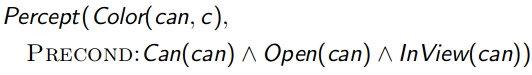
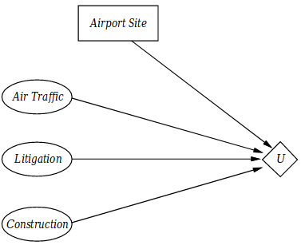

might be tangible objects (e.g. barcodes on letters), or events (changes in the world)
things to be acted on via actuators
see "Types of Environment" section for more details.
Through its sensors
Might be level- or edge-triggered.
Level-Triggered: sensor continues signalling as long as the stimuli is constant
Edge-Triggered: sensor signals once the amount stimuli changes
To achieve its goals
This is very closely related to the concept of performance measure.
"As a general rule, it is better to design performance measures according to what one actually wants in the environment, rather than according to how one thinks the agent should behave."
An example for the violation of this rule: "We might propose to measure performance by the amount of dirt cleaned up in a single daily-shift. With a rational (vacuum cleaner) agent, of course, what you ask for is what you get: a rational agent will maximise this performance measure by cleaning up the dirt, then dumping it all on the floor, then cleaning it up again, and so on!"
By acting on its environment via actuators.
Examples:
Mail Sorting Robot
Environment: conveyor belt of letters
Goals: route letter into the correct bin
Percepts: barcodes read
Actions: route letter into bin
Intelligent House
Environment:
occupants enter and leave house
occupants enter and leave rooms
daily variation outside light and temperature
Goals:
keep occupants warm
room lights are on whenever and only when a room is occupied
house energy efficient
Percepts:
signals from temperature sensor
movement sensor
light detector
Actions:
room heaters on/off
lights on/off
Simple Reflex Agents
function Simple-Reflex-Agent(percept) returns action:
persistent: rules - set of condition-action rules
# Pay attention to the fact that state is constructed
# purely out of the current percept.
state := Interpret-Input(percept)
rule := Rule-Match(state, rules)
action := rule.ACTION
return action
Action depend only on immediate percepts.
Note this well!
Because of this property, Simple-Reflex Agents will work "only if the correct decision can be made on the basis of only the current percept."
This often requires the environment to be fully-observable.
And again often, infinite loops are unavoidable for Simple-Reflex agents operating in partially-observable environments, due to lack of some percepts and the non-existence of our memory!
Randomising the action of Simple-Reflex agents is an elegant way to mitigate this issue.
Implemented by condition-action rules.
Example:
Agent: mail sorting robot
Environment: conveyor belt of letters
Rule: if city is "Edinburgh" then put the letter into Scotland bag
Model-Based Reflex Agents
function Reflex-Agent-With-State(percept) returns action:
persistent: state - description of current world state
model - description of how the next state depends
on current state and does affected by our
actions
rules - a set of condition-action rules
action - the most recent action, initially none
state := Update-State(state, action, percept, model)
rule := Rule-Match(state, rules)
action := rule.ACTION
return action
The next logical step after memory-less Simple-Reflex Agent.
Action may depend on HISTORY (i.e. memory) and unperceived aspects of the world.
This requires a model + state.
What does unperceived aspects mean?
It means that we might deduce certain facts about the future states of the world given its current state.
"What the world is like now" + "How the world evolves"
"What the world is like now" + "What (effects) my actions do (have)"
Realise that this "model" is some "knowledge about "how the world works" -- whether implemented in Boolean circuits or by some other means."
As evidenced by the existence of Update-State function; how can you update your state if you don't have a (mental) model of the world.
"It is seldom possible for the agent to determine the current state of a partially observable environment exactly."
Also called reflex agents with state.
Example:
Agent: robot vacuum cleaner
Environment: dirty room, furniture
Model: maps of each room, keeping track of areas that are already cleaned
Goal-Based Agents
Agents with variable --but no conflicting-- goals
Example:
Agent: household service robot
Environment: house & people
Goals: clean clothes, tidy rooms, lay table, etc.
The most important distinction is that instead of having to encode our goals as condition-action rules, we now directly "supply" the goal(s) and the agent plans.
Two important concepts introduced by goal-based agents are:
"What it will be like right afterwards a if I take a certain action now?"
"What action should I do now?" (based on my Goals)
Utility-Based Agents
Agents that optimise "utility" over a range of goals.
Over Goal-Based Agents, Utility-Based Agents have the offer the following advantages:
Agents so far have had a single goal, but they may have to juggle conflicting goals.
Under uncertainty, combining with probability of success with the utility of each outcome yields expected utility, which helps us operate in such environments.
Utility is defined as a "measure of goodness" (a real number).
"An agent's utility function is essentially an internalisation of the performance measure."
It is highly desirable that the agent's utility function and the external performance measure are in agreement!
And yet it is a gravely mistake to define external performance measure in terms of the agent's utility function! Performance measure should precede.
Example:
Agent: automatic car
Environment: roads, vehicles, signs, etc.
Goals: stay safe, reach destination, be quick, obey law, save fuel, etc.
The most important concept introduced by utility-based agents is asking, for each possible action:
"How happy will I be in such state, if I have taken the action X?"
The action chosen is simply the one that yields most happiness.
Types of Environment
Fully Observable vs. Partially Observable
Full: agent's sensors describe the environment state fully.
Partial: some parts of the environment not visible, and/or sensors are noisy.
Deterministic vs. Stochastic (i.e. unpredictable)
Deterministic: next state fully determined by current state and agent's actions (alone).
Stochastic: random changes (can't be predicted exactly).
"Our use of the word "stochastic" generally implies that uncertainty about outcomes is quantified in terms of probabilities."
An environment may appear stochastic if it's only partially observable.
Episodic vs. Sequential
Episodic: next action does not depend on previous actions, e.g. mail-sorting robot.
Sequential: next action depends on previous actions, e.g. crossword puzzle.
Static vs. Dynamic
Static: environment unchanged while agent deliberates, e.g. factory robot.
Dynamic: environment changes while agent deliberates, e.g. self-driving car.
Discrete vs. Continuous
Discrete: percepts (i.e. sensor data), actions, and episodes are discrete.
Continuous: ... are continuous.
Single-Agent vs. Multi-Agent
Self-explanatory.
Multi-Agent environments also tend to be:
Sequential (very likely), since our action would influence the action of other agents, and their action will influence ours.
Dynamic, unless each actor acts "in turn" whilst waiting for each other (e.g. chess).
Do not think that all multi-agent environments are stochastic if we cannot predict the behaviour of all other agents: "in our definition (of deterministic), we ignore uncertainty that arises purely from the actions of other agents in a multi-agent environment;" thus, a chess game is considered to be deterministic.
17 January 2019
Simple Problem Solving Agent
function Simple-Problem-Solving-Agent(percept) returns an action:
persistent: seq - an action sequence, initially empty
state - some description of the current world state
goal - a goal, initially null
problem - a problem formulation
state := Update-State(state, percept)
if seq is empty then
goal := Formulate-Goal(state)
problem := Formulate-Problem(state, goal)
seq := Search(problem)
if seq = failure then
return null action
action := First(seq)
seq := Rest(seq)
return action
Percepts provide new information about current state.
Often interleave search & execution.
Unknown state space (exploration problem)
Do not confuse with non-observable or partially observable!
Unknown state space means the state space is unknown --which is far worse than knowing your state space but not knowing the current state.
Example: Vacuum World
Example: The 8-Puzzle
Example: Robotic Assembly
Search Trees
We know that a state is a (representation of) a physical configuration.
A tree node is a book-keeping data structure constituting part of a search tree, and includes
state
parent node
[which is interesting because often we keep track of child nodes in trees]
[this also ensures that there is only a single action given a node!]
action
path cost (i.e. weight of the edge)
Tree-Search function
function Tree-Search(problem) returns a solution or a failure:
initialise `frontier` using the initial state of `problem`
loop:
if frontier is empty:
return failure
leaf := frontier.Pop()
if leaf is goal:
return a solution
frontier.Add-All(leaf.expand())
Beware that if the tree is not a DAG (directed acyclic graph), the function is not guaranteed to terminate.
TODO
What does being parent imply?
How does tree-search work precisely, like what does it mean to expand if we don’t keep track of child nodes (but just the parent)?
How to initialise frontier with the initial state of problem?
How do we compute the solution? By backtracing or by following the parent?
Summary
Problem formulation usually requires abstracting away real-world details to define a state space that can feasibly be explored.
18 January 2019
Search Strategy
A search strategy is defined by picking the order of node expansion (taken from the frontier).
Strategies are evaluated along the following dimensions:
completeness: does it always find a solution if one exists?
time complexity: number of computational steps taken, or number of nodes visited
space complexity: maximum number of nodes in memory
optimality: does it always find a least-cost solution?
Time and space complexity can be measured in terms of:
$b:$ maximum branching factor of the search tree
$d:$ depth of the optimum solution
$m:$ maximum depth of the search space (which might be $\infty$).
Graph Search
Tree-Search algorithm augmented with a set of explored nodes, so to prevent visiting them again and again (thus avoiding the danger of infinite loops/recursions).
Newly expanded nodes already in the explored set are discarded.
Breadth-First Search
Keep expanding the shallowest unexpanded node.
Use when completeness and optimality is important.
Implementation:
Frontier is a FIFO queue.
Properties:
Complete (if b [maximum branching factor of the search tree] is finite).
Time complexity is $O(b^d)$.
Space complexity is also $O(b^d)$ (keeps every node in memory).
.Optimal (assuming cost is the same between all nodes).
Space is the biggest problem (more than time).
Depth-First Search
Keep expanding the deepest unexpanded node.
Use when low-cost (especially space-wise) is important.
Works okay when the graph is "dense" (i.e. $b$ is large and $m$ is small).
Implementation:
Frontier is a LIFO queue.
Properties:
Incomplete, fails in spaces with loops and infinite-depth spaces.
Of course it can be modified to avoid repeated states along the path, but that will increase the space complexity.
Time complexity is $O(b^m)$, which is terrible if $m$ is much larger than $d$.
$b^m$ because there are $b^m$ leaves of a tree with depth $m$ (starting at zero) and $b$ branches at every level.
Space complexity is $O(bm)$, i.e. linear!
Non-optimal.
Depth-Limited Search
Depth-first search with **depth limit $l$ ** (called cutoff).
Nodes at depth $l$ are taken to have no successors.
Iterative Deepening Search
When we increase the depth limit $l$ iteratively.
There is some cost associated with generating upper levels again and again.
Overhead is around 11% for $b = 10, d = 5$.
Properties:
Complete.
Time complexity is $O(b^d)$.
Space complexity is $O(bd)$.
Optimal (assuming cost is the same between all nodes).
Seems like best of both worlds!
Summary
All these algorithms are considered to be uninformed, since there is no other information about the graph then the graph itself!
22 January 2019
Games
We concern ourselves with zero-sum games that are
Deterministic
Fully observable
Played in turns (i.e. agents act alternately)
Utilities (i.e. scores) at the end of game are equal and opposite (i.e. zero-sum)
"Unpredictable" opponent requires us to specify a move for every possible reply of him.
Time limits force us to approximate, since it might be unlikely to find the goal in complex games (like chess, go, ...).
Game Trees
Game trees are used for two-player, deterministic games.
Each node is a possible game state, and at each (horizontal) level it's someone else's turn.
Normal vs Adversarial Search
adversarial /ˌadvəˈsɛːrɪəl/ involved or characterised by conflict or opposition
In normal search, the optimal decision is a sequence of actions leading to a goal state
Whereas in adversarial search, the optimal decision must be taken against the optimal decision of the opponent, and thus is not a single continuous sequence of actions but it's a series of actions against the series of opponent's actions.
Minimax
Applicable when:
it's a deterministic
...zero-sum game
...played in turns
...with two players
The idea (simply, but still accurately):
Imagine the game tree...
Evaluate the leaves of the tree from the point of view of the first player and assign scores.
Starting from the bottom of the tree (i.e. from its leaves), keep record of the minimum and the maximum score of each node's children.
The first player shall always choose* the node with the highest minimum score.
The first player is also called max-player as it tries to maximise its score.
*: "Choosing" means playing such that the next game state is as indicated by that node.
The second player shall always choose the node with the lowest maximum score.
The second player is also called min-player as it tries to minimise the first-player's score.
"Why doesn't it try to maximise it's own score instead?" you might ask; because:
It's a zero-sum game, meaning that you won just as much as your opponent looses and vice versa so in the end it makes no difference.
Also because the whole tree, for convenience, built from the first player's point of view so consequently the actions of the second player must be in reference to the first player.
"Best achievable payoff against best play."
Properties of Minimax
Complete? Yes, if the game tree is finite.
Optimal? It is, against an optimal opponent though.
Time complexity? $O(b^m)$ ($b$ is the number of branches and $m$ is the depth of the tree)
$b^m$ because there are $b^m$ leaves of a tree with depth $m$ (starting at zero) and $b$ branches at every level.
Space complexity? $O(bm)$ (depth-first exploration)
For any non-trivial game, the exact solution is completely infeasible since the game tree is enormously large!
You would like to eliminate large parts of game tree as much as possible to speed things up.
$\alpha-\beta$ Pruning
Applicable whenever Minimax is applicable.
Desirable -especially- when the game tree is too large to use Minimax algorithm feasibly.
We have described the Minimax algorithm consisting of two stages:
Firstly, evaluating the game tree in a bottom-up fashion.
Secondly, maximising and minimising the first (starting) player's score in turns.
Whereas, often the Minimax algorithm is applied in a top-down fashion to the game tree recursively, in real time.
Which is what we have been taught in class.
This is infeasible for huge game trees due to practical time restrictions.
$\alpha - \beta$ pruning works with top-down Minimax algorithm!
The idea:
We will try to prune (i.e. eliminate) recursing into branches that we know to be irrelevant to us, due to minimisation and maximisation.
$\alpha$ is the value of the "best" (i.e. highest-value) choice found so far for MAX.
$\beta$ is the value of the "best" (i.e. lowest-value) choice found so far for MIN.
Best explained through an example.
Example
The max player starts first, and thus evaluates the first branch:
Since the max player is trying to maximise it's score all the time, it thinks that "for me to choose, any new branches that I consider must have a score greater than or equal to 3."
The max player knows that his opponent is trying to minimise his score.
In the second step of evaluation, the max player starts evaluating the second branch:
The first child of the second branch is 2, and the max player now thinks that his opponent, trying to minimise his score all the time, will chose the smallest-scored node so the score of the this branch cannot be greater than two ($\le 2$).
The max player also remembers that the previous (first) branch he explored had a score of 3 so he has no reason to explore the other children of the second branch.
This saves him so much time!
In the third step of evaluation, the max player starts evaluating the third branch:
The first child of the third branch is 14, and the max player now thinks that his opponent, trying to minimise his score all the time, will choose the smallest-scored node so the score of the this branch cannot be greater than fourteen ($\le 14$).
The max player also remembers that the first branch he explored had a score of 3 so he is intrigued to explore the other children of this branch to see if it's score is greater than 3.
In the fourth step of evaluation, the max player keeps evaluating the third branch:
The second child of this branch is 5, and the max player now thinks that his opponent, trying to minimise his score all the time, will choose the smallest-scored node so the score of the this branch cannot be greater than five now ($\le 5$).
But $5 \ge 3$ so the max player decided to keep evaluating.
In the fifth (and the last) step of evaluation, the max player keeps evaluating the third branch:
The last child of this branch is 2, and having explored all the children, the max player calculates the score of this branch as 2 (the minimum of all children since this the min player [his opponent] will try to minimise his score in the next turn).
Also having explored all the branches, the max player chooses the branch with the highest score, which is the first branch with score 3.
Properties
Pruning does not affect the final result.
Good move ordering improves the effectiveness of pruning.
In the example, imagine if the first child of the third branch was 2 instead of 14:
Then we would be able to prune other two children!
With "perfect (good move) ordering", its time complexity is $O\left(b^{m/2} = \left(\sqrt b\right) ^m\right)$.
$b$ being number of branches, and $m$ being the depth of the tree.
$m/2$ implies that using $\alpha-\beta$ pruning we can explore twice as much depth as we could before in the same duration.
A simple example of the value of reasoning about "which computations are relevant?" (a form of meta-reasoning).
In Practice
Due to time limits, there is often a cutoff point: no nodes beyond a certain depth limit will be explored.
Another alternative is quiescence search, which tries to search interesting positions to a greater depth than quiet ones.
There are well-known positions and strategies in many games, an example being chess.
In the presence of a cutoff point, the evaluation function has to estimate!
Weighted sum of features is a classic example.
This should remind you of utility-based agents!
24 January 2019
Informed Search
"Informed" indicated that there is "additional information" about the graph.
E.g. for a graph where nodes are cities and edges are roads between cities with weights to indicate the distance, additional information might be the Euclidean distance (i.e. straight-line distance [SLD]) between cities.
Evaluator functions that utilise additional information are called heuristic functions (denoted as $h(n)$).
Heuristics are estimations.
Today we'll see some algorithms that exploit this additional information.
Best-First Search
In the most generic sense of the word, best-first means that, well, the nodes (in the frontier) that are deemed to be the best are expanded first.
Based on an evaluation function $f(n)$ taking a node $n$.
It means nothing, nothing more than that!
There are two search algorithms which belongs to best-first family:
Greedy best-first search
A* search
Greedy Best-First Search
Evaluation function is simply the heuristic function.
Alternatively stated as $f(n) = h(n)$.
$h(n)$ is the estimated cost (i.e. heuristic) of cheapest path from node $n$ to the goal state.
Greedy Best-First Search expands the node that appears to be closest to the goal at every step.
Properties:
Incomplete, since it can get stuck in loops.
Considering we are using this very weird tree visualisation as shown below:
... which is not exactly a tree because the exact *** nodes (i.e. cities) can appear multiple times in the tree, meaning that semantically there are loops in your tree (wat) but formally there aren't any (WAT)...
Using logical reasonable rational normalgraphs, best-first search is complete in finite space, but not in infinite ones.
Time complexity is $O(b^m)$ for the weird-tree version but a good heuristic can give dramatic improvement.
$b$ for number of branches from each node (assuming it's constant), and $m$ for the depth of the tree (considering root at depth 0).
Space complexity is $O(b^m)$ since it keeps all nodes in memory.
Non-optimal.
As a rule of thumb, you can say that "greedy" algorithms are all non-optimal.
Then he said to them, “Watch out! Be on your guard against all kinds of greed [...] Luke 12:15
A* Search
Similar to Greedy Best-First Search, but considers the cost of getting to the path as well.
Evaluation function $f(n) = g(n) + h(n)$:
$g(n)$: cost so far to reach $n$
$h(n)$: estimated cost from $n$ to the goal (heuristic)
$f(n)$: estimated total cost of path through $n$ to the goal
Realise that unlike Greedy Best-First Search, we know need our edges of the graph to be weighted.
Another requirement is that all the weights must be non-negative.
Properties:
Both complete and optimal if $h(n)$ is admissibleandconsistent.
Time complexity is exponential.
Space complexity is also exponential as it keeps all the nodes in memory.
Heuristic Functions
A heuristic is any method that is believed or “practically” (not theoretically!) proven to be useful (in many “practical” cases) for the solution of a given problem..…
..…although there is no guarantee that it will always work or lead to an optimal solution.
Heuristic functions can never change the worst case complexity of an algorithm but can help in the average case.
Admissibility:
An heuristic $h(n)$ is admissible if for every node $n$, $h(n)$ is less than or equal to the true cost to reach the goal state from $n$.
In other words, an admissible heuristic never overestimates the cost to reach the goal. Also called optimistic.
Thus, $f(n) = g(n) + h(n)$ never overestimates the true cost of a solution.
Consistency:
An heuristic is consistent if it abides to triangle inequality:
In the figure above, $h(n)$ is consistent iff $h(n) \le c(n, a, n') + h(n')$.
$h(n)$ is the estimated cost of getting from $n$ to the goal state $G$.
$c(n, a, n')$ cost of getting from $n$ to $n'$ (using branch $a$).
$h(n')$ is the estimated cost of getting from $n'$ to the goal state G.
Dominance:
Both admissible, if $h_2(n) \ge h_1(n)$ for all $n$ then
$h_2$ is said to dominate $h_1$, and that
$h_2$ is better for search!
Because if $h_2$ is greater than $h_1$ for all $n$ whilst staying admissible, it means that it must have much more accurate estimations than $h_1$!
Common Heuristics:
Euclidean (Straight Line) Distance:
Often used for calculations in two-dimensional spaces with no restriction on the direction of movement.
Due to triangle inequality, it is guaranteed to be admissible.
Manhattan (Taxicab) Distance:
Often used for calculations in two-dimensional spaces with restriction on the direction of the movement.
Where only allowed directions are North-East-South-West.
Where the restriction on the direction applies, it is admissible.
Relaxed Problems
A problem with fewer restrictions on the actions is called a relaxed problem.
The cost of an optimal solution to a relaxed problem is an admissible heuristic for the original problem.
We can use relaxation to automatically generate admissible heuristics.
25 January 2019
Knowledge-Based Agents
Consist of two subsystems:
Inference Engine which contains domain independent algorithms for logical inference
Knowledge Base (KB) which consists of domain-specific content
A knowledge base is a set of sentences in a formal language.
In other words, we tell the agent what it needs to know.
Then the agent can ask the knowledge base (with the help of the inference engine of course!) what to do.
Answers should follow (i.e. should be "inferrable") from the knowledge base!
Knowledge bases are declarative, that is to say, the sentences define what things are, not how they became our how they do.
Knowledge base can be part of a single agent or can be accessible to many agents.
Sometimes we need to analyse a knowledge base at different levels:
knowledge level: what a KB knows/contains, regardless of how its implementation.
This is the level that we often concern ourselves with.
implementation level: thinking of a KB as a combination of data structures and algorithms that manipulate them
Pseudocode:
function KB-Agent(percept) returns an action:
persistent: KB - knowledge base
t - a counter, initially 0, indicating time (monotonic clock)
# We tell our KB about the most recent state of the world
# as we perceive.
Tell(KB, Make-Percept-Sentence(percept, t))
# "What should I do now (t)?" we ask our knowledge base.
action := Ask(KB, Make-Action-Query(t))
# We tell our KB about the action we are about to take.
Tell(KB, Make-Action-Sentence(action, t))
# Increase our monotonic clock
t := t + 1
return action
The agent must be able to:
Represent states (implicitly in the KB), percepts (Make-Percept-Sentence()), actions (Make-Action-Sentence()) etc.
Incorporate new percepts (line 7)
Update internal representations of the world (Tell())
Deduce hidden properties of the world (implicitly through the KB)
Deduce appropriate action (Ask())
PEAS
Performance measure i.e. evaluation methods; closely related to "goals!"
Environment read section 15 January 2019 for a description and properties of environments; beware of oversimplifying while thinking about the environment!
Actuators actions that can be taken in the world; might affect our environment too.
Sensors information/percepts that we receive
Example: Wumpus World
Logics
Logics (like mathematics [yes, both plural]) are formal languages for representing information such that conclusions can be drawn
Syntax defines the sentences in the language.
Semantics define the meaning of sentences.
Of course, we humans are the ultimate source of any meaning in any sentence.
That's all the motorcycle is, a system of concepts worked out in steel. There's no part in it, no shape in it, that is not out of someone's mind --- Robert M. Pirsig, Zen and the Art of Motorcycle Maintenance
Our sentences (generated from sensory data or whatever) are often assumed to be self-evident enough to not require any further consideration, thus we focus on syntactic manipulation (such as logical inference.)
Because semantics is dangerously close to metaphysics.
Entailment
Entailment means that one thing follows from another. $$ KB \vDash \alpha$$
Semantic Entailment (or just entailment), Syntactic Entailment (or inference), and Material Implication (or just implication):
Those three are often confused, and the difference are rarely well understood so here is some clarification.
Semantic Entailment ($KB \vDash \alpha$) means that $KB$ SHOULD entail $\alpha$.
As we have said earlier, semantics is dangerously close to metaphysics and so is this concept.
We say that, we as an human being, acknowledge that we can see that $KB$ indeed entails $\alpha$.
In other words, semantic entailment is a relationship between sentences that is based on semantics.
Syntactic Entailment ($KB \vdash \alpha$) means that our inference engine entails (or can entail when asked) $\alpha$ from $KB$.
Realise that this talks about a mechanical process.
Sometimes you'll see $KB \vdash_i \alpha$ where $i$ is the (name of the) process.
This is indeed the case ($KB \vDash \alpha$) if our syntactic entailment algorithm is sound, meaning that it won't prove anything that's wrong (i.e. no wrong proofs).
If our syntactic entailment algorithm is complete, then we can entail (i.e. prove) any $\alpha$ can indeed be entailed from $KB$.
Material Implication ($p \Rightarrow q$ or alternatively $p \rightarrow q$) is a boolean operator so that an expression such as $p \to q$ can be evaluated to a boolean value.
Neither semantic entailment nor syntactic entailment are boolean operators; they do not evaluate to a boolean value!
The difference is not as clear in propositional logic, because given a $KB := {p, q, r, \lnot s}$ (in CNF) and $\alpha = p \land r$, it's clear to us that $KB \vDash \alpha$ and material implication $$ KB \to p \land r\\ {p, q, r, \lnot s} \to p \land r $$ indeed is true, but realise that:
Material implication does not generate new propositions from a given KB.
Material implication is an expression, it's declarative. We need a process, an algorithm to use in our agents!
This is even more important with first-order logic since even a simple-looking material implication is not as immediately evident!
Hopefully things will become clearer as you read more on the subject and gain familiarity with them.
A knowledge base KB entails sentence $\alpha$ if and only if $\alpha$ is true in all worldswhere KB is true.
Models
Logicians typically think in terms of models, which are formally structured worlds with respect to which truth can be evaluated.
For instance in propositional logic, each model specifies true/false for each proposition symbol.
So we can think of a model as a row of a truth table!
We say $m$ is A model of sentence $\alpha$, if $\alpha$ is true in $m$.
$M(\alpha)$ is the set of all models of $\alpha$.
In other words $\alpha \equiv \beta \text{ iff } M(\alpha) \subseteq M(\beta) \land M(\beta) \subseteq M(\alpha)$
Yani $\alpha \equiv \beta \text{ iff } M(\alpha) = M(\beta)$ which is to say "two sentences are logically equivalent iff true in the same models."
Inference by Enumeration
Depth-first enumeration of all models is both sound and complete.
For $n$ symbols, it's time complexity is $O(2^n)$ and space complexity is $O(n)$.
It's basically enumerating all the rows of a truth table by assigning each propositional symbol true and false, and at each row, evaluating $KB \to \alpha$.
Validity and Satisfiability
A sentence is valid if it's true in all models.
There is no such thing as invalid sentence!
Validity is connected to inference via the Deduction Theorem:
$KB \vDash \alpha \text{ if and only if } KB \to \alpha \text{ is valid}$
A sentence is satisfiable if it's true in some model(s).
A sentence is unsatisfiable if it is true in no models.
Satisfiability is connected to inference via the following:
$KB \vDash \text{ if and only if } KB \land \lnot \alpha \text{ is unsatisfiable}$
Proof Methods
Proof methods divide into (roughly) two kinds:
Application of Inference Rules
Legitimate (sound) generation of new sentences from old.
A proof in such system would be a sequence of inference rule applications.
Typically require transformation of sentences into a normal form.
Example: resolution.
Model Checking
Truth table enumeration.
Always exponential in $n$
Improved backtracking methods exists, e.g. DPLL (Davis-Putnam-Logemann-Loveland) method.
Heuristic search methods in the model space also exist.
Sound but incomplete.
29 January 2019
(Effective) Propositional Inference
Two families of efficient algorithms for propositional inference:
Complete backtracking search algorithms
DPLL (Davis, Putnam, Logemann, Loveland)
Incomplete local search algorithms
WalkSAT algorithm
Conjunctive Normal Form (CNF)
Both DPLL and WalkSAT manipulate formulae in conjunctive normal form.
Sentence is a formula whose satisfiability is to be determined.
In CNF form, a sentence is a conjunction ($C_1 \land \ldots \land C_n$) of clauses.
A clause is a disjunction of literals ($L_1 \lor \ldots \lor L_m$).
A literal is a proposition or a negated proposition ($L_1$ or $\lnot L_1$).
Clauses and literals can be separated by comma too:
Move "not" inwards using de Morgan's rules such that there are no "not"s in front of any parentheses: $P \lor \lnot (Q \land R)$ becomes $P \lor \lnot Q \lor \lnot R$
Distribute OR over AND: $P \lor (Q \land R)$ becomes $(P \lor Q) \land (P \lor R)$
Flatten: $P \land (Q \lor R \lor (S \lor T))$ becomes $P \land (Q \lor R \lor S \lor T)$
N.B. that the sentences with a single clause are also in CNF form (even though they might look otherwise)! For instance:
$P \lor Q \lor R$ is represented as $(P, Q, R),$ and is a sentence with a single clause!
Did you know that you can use bolexman < labs.boramalper.org/boolexman > to convert any propositional expression into CNF?
0001> toCNF (P iff R or Q)
toCNF (P <=> (R v Q))
━━━━━━━━━━━━━━━━━━━━━
1. Transform all if-then-else (ITE) expressions:
No ITE expressions are found!
After all ITE expressions are transformed:
(P <=> (R v Q))
2. Transform all if-and-only-if (IFF) expressions:
• (P <=> (R v Q))
is transformed into
!(P + (R v Q))
After all IFF expressions are transformed:
!(P + (R v Q))
3. Tranform all implications:
No implications are found!
After all implications are transformed:
!(P + (R v Q))
4. Tranform all exclusive-or (XOR) expressions:
• (P + (R v Q))
is transformed into
((P v R v Q) ^ (!P v !(R v Q)))
After all XOR expressions are transformed:
!((P v R v Q) ^ (!P v !(R v Q)))
5. Distribute NOTs:
• !(R v Q)
is transformed into
(!R ^ !Q)
• !((P v R v Q) ^ (!P v (!R ^ !Q)))
is transformed into
(!(P v R v Q) v !(!P v (!R ^ !Q)))
• !(P v R v Q)
is transformed into
(!P ^ !R ^ !Q)
• !(!P v (!R ^ !Q))
is transformed into
(!!P ^ !(!R ^ !Q))
• !!P
is transformed into
P
• !(!R ^ !Q)
is transformed into
(!!R v !!Q)
• !!R
is transformed into
R
• !!Q
is transformed into
Q
After all NOTs are distributed:
((!P ^ !R ^ !Q) v (P ^ (R v Q)))
6. Distribute ORs over ANDs:
• ((!P ^ !R ^ !Q) v (P ^ (R v Q)))
is transformed into
((!P v R v Q) ^ (!R v P) ^ (!Q v P))
Resultant expression:
((!P v R v Q) ^ (!R v P) ^ (!Q v P))
DPLL Algorithm
Used to determine if an input propositional logic sentence (in CNF) is satisfiable.
It is much better than truth table enumeration because of:
Tautology deletion (optional)
Early termination
Various heuristics
Unit clause heuristic
Pure symbol heuristic
The order of heuristics is important too! Not covered here, but a little thinking would help.
Early Termination
We know that:
A clause is true if one of its literals is true.
A sentence is false if any of its clauses is false.
We can use these facts to avoid unnecessary work.
Unit Clause Heuristic
A unit clause is a clause that consists of a single literal.
...and we know that, since the sentence is in CNF, the literal must be true.
The idea can also be extended to cases where we know all but one literal is not known to be false; for example:
Given $(\lnot B), (\lnot C), (A, B, C)$
Apply unit clause heuristic on clauses $(\lnot B)$ and $(\lnot C)$: $\cancel{(\lnot B)}, \cancel{(\lnot C)}, (A, B, C)$
We know that $B$ and $C$ are false, therefore we can apply unit clause heuristic on clause $(A, B, C)$ too: $\cancel{(\lnot B)}, \cancel{(\lnot C)}, \cancel{(A, B, C)}$
Thus we found a satisfying evaluation: $A$ is true. $B$, $C$ are false.
Pure Symbol Heuristic
A pure symbol is a literal that appears always with the same "sign" or "polarity" in all clauses.
In more comprehensible words, the literal is either always negated or never negated!
For instance, in $(A, \lnot B), (\lnot B, \lnot C), (C, A)$
$A$ and $\lnot B$ are pure.
$C$ is impure.
Make pure symbols true.
In our example above, we would make $A$ and $\lnot B$ true (thus making $B$ false).
This, in combination with early termination, would eliminate all the clauses without us having to consider $C$; neat!
Tautology Deletion
Tautology is when both a proposition and its negation are in a single clause: e.g. $(A, B, \lnot A)$
Tautologies are bound to be true!
Therefore they can be deleted at the very beginning (sort of like preprocessing).
WalkSAT Algorithm
Incomplete, local search algorithm.
Algorithm checks for satisfiability by randomly flipping the values of variables.
Evaluation function is the min-conflictheuristic that minimises the number of unsatisfied clauses.
Aims a balance between greediness and randomness.
Much more efficient than DPLL:
Hard Satisfiability Problems
Remember than every propositional sentence can be represented as a 3-CNF (CNF with maximum literals per clause).
For example: $$(\lnot D \lor \lnot B \lor C) \land (A \lor E \lor F) \land \ldots$$
$m$: number of clauses
$n$: number of symbols/literals
Hard problems seem to cluster near $m / n = 4.3$ (critical point).
Expressiveness Limitation of Propositional Logic
While programming agents, our knowledge bases has to contain sentences for each instance to which a phenomena applies.
For instance, we know that the gravity applies to all objects with mass (pardon the physical inaccuracies). We can state this in predicate (first-order) logic as: $\forall x. (has\_mass(x) \implies affected\_by\_gravity(x))$ whereas in propositional logic we must create a proposition for each object with mass in our universe explicitly: $$\begin{align*} G_{Bora} &\equiv affected\_by\_gravity(Bora)\\ G_{Apple} &\equiv affected\_by\_gravity(Apple)\\ &\vdots \end{align*}$$
Rapid proliferation of clauses, even in smallest cases!
31 January 2019
Constraint Satisfaction Problems (CSPs)
Standard Search Problem
State is a "black box", any data structure that supports
a successor function
a heuristic function
and a goal test
would suffice.
Constraint Satisfaction Problem
State is defined by variables $X_i$ with values from domain $D_i$.
Goal test is a set of constraints specifying allowable combinations of values for subsets of variables.
In a more clear way: constrains are logical expressions over variables.
This in turn allows useful general-purpose algorithms with more power than standard search algorithms.
A solution is a complete and consistent assignment.
Simplest form of propagation makes each arc consistent.
$X \rightarrow Y$ is consistent iff
for every value of the variable $X$, there is some allowed/legal value $y$ in the domain of variable $Y$.
(that little arrow $X \rightarrow Y$ is an arc by the way, not implication!)
It's called Arc Consistency because you draw an arc from X to Y for visualisation purposes...
Variables:WA, NT, Q, NSW, V, SA, T
Domain:red, green, blue
Arc:SA -> NSW
It is immensely helpful to think Arc Consistency in Constraint Graphs:
For each node:
For every value of the node, there is some some allowed/legal value that its neighbour can take.
Realise that you do not need to check arc consistency for all nodes/states again and again:
You only need to check for states/nodes who lost a value.
It's costly anyway:
Time complexity: $O(cd^3)$ where $d$ is the maximum size of each domain and $c$ is the number of binary constraints (arcs).
Space complexity: $O(c)$
Arc consistency detects failure earlier than forward checking.
Indeed, you can think of forward checking as a very limited form of Arc Consistency where only the neighbours of the most recent node/state is checked!
5 February 2019
Propositional Logic (PL)
(+) Propositional Logic (PL) is declarative.
(+) PL allows partial, disjunctive, and negated information.
Partial: Instead of saying "false" (or claiming that "it's not the case"), it allows us to say "we don't know" if we can't conclude an assertion from certain premises.
There are also "3-valued logics" (such as Lukasiewicz logic) that has an explicit 3rd value called "I don't know!"
Disjunctive: The dominant majority of real-world databases conjunct data, for example: "A person has a name and a date of birth and a gender and ..." whereas we can construct disjunctions in PL (which should be obvious)!
Our lovely Haskell of course supports "disjunctive" data types, remember Algebraic Data Types?
Negated: Again, the dominant majority of real-world databases record "positive" data: you record the presence of something and again there is often not a way to record something which is not the case. So for instance, while we can record the age of a person, we cannot store the fact that that person is not 21 years old. In contrast, PL allows its "facts" to be negated.
(+) PL is compositional, that is, the meaning of its sentences can be derived from its elements!
(+) Meaning in PL is context-independent (i.e. unambiguous), unlike natural language where meaning depends on many contexts.
(-) PL has very limited expressive power, unlike natural language.
For instance, we cannot say "pits cause breezes in adjacent squares", except by writing a sentence for each square.
First-Order Logic (FOL)
Whereas PL assumes the world contains facts, first-order logic (FOL) --like natural language-- assumes the world contains:
Objects: people, houses, numbers, colours, ...
Relations (predicates):
Unary: prime, hot, cold, ...
Binary: "brother of", "bigger than", "part of"
...
Functions: "one more than", "plus", "father of"
NOTE WELL:
Relations (predicates) are "evaluated" to True or False whereas Functions "return" an object.
Unfortunately both predicates and functions have the same syntax (e.g. function: $\text{FatherOf(Jesus)} = \text{Jesus}$) (e.g. relation: $\text{BiggerThan(Jesus, Temple)} = \bot$), but take care not to confuse them!
By John 2:13-17, we know that Jesus can fit inside the temple which also gives us an upper bound on his size.
These are all very abstract concepts, almost in the metaphysical sense so don't sweat to much.
It's just that we are trying to make a distinction between the name of an object, predicate, or function and the object, predicate, or function itself!
An interpretations is called a "model of a set of formulas" when all the formulas in that set are true according to that interpretation.
Perception implications are responsible for updating our view of the world.
Reflex:e.g. $\forall t. \text{Glitter(t)} \implies \text{BestAction(Grab, t)}$
Reflex implications are responsible for helping us decide what is the best action to take given an up-to-date view of the world.
The implications can be categorised under one of the following "rules:"
Diagnostic Rule: inferring cause from effect e.g. $\forall s. \text{Breezy}(s) \implies \exists r. \text{Adjacent}(r, s) \land \text{Pit}(r)$
Casual Rule: inferring effect from cause e.g. $\forall r. \text{Pit}(r) \implies [\forall s. \text{Adjacent}(r, s) \implies \text{Breezy}(s)]$
7 February 2019
Universal Instantiation (UI)
Every instantiation of a universally quantified formula $\alpha$ is entailed by it (the universally quantified formula).
$ \dfrac{\forall v. \alpha} {\alpha {v / g}} $
read as "$\forall v. \alpha$ entails that $\alpha$ must be true when $v$ is substituted by $g$."
...is true for any variable $v$ and ground term $g$.
Any, because it's universal quantifier!
A ground term, which we substitute our variable by, contains no variables.
Usually the ground term itself is an object in your domain, or something that evaluates into an object like a function call.
Also called "Universal Elimination."
Existential Instantiation (EI)
Some instantiation of an existentially quantified formula $\alpha$ is entailed by it (the existentially quantified formula).
$\dfrac{\exists v. \alpha}{\alpha {v/k}}$
...is true for someconstant symbol $k$.
Some, because it's existential quantifier!
We use a **constant symbol **because $k$ must NOT appear elsewhere in the knowledge base. This restriction is to prevent the name conflicts:
If you have $\exists x. \text{Round}(x)$ and $\exists x. \text{Red}(x)$ and if you substitute $x$ with the same constant symbol $c$, you'll get: $ \dfrac{\exists x. \text{Round}(x)\quad\exists x. \text{Red}(x)}{\text{Round}(c)\quad\text{Red}(c)} $ which, wrongly, entails that there is something that is both round and red which cannot be concluded from our premise!
Universal Instantiation does not suffer from this of course, since a universally quantified sentence must hold true for all objects. =)
The new constant symbol is called a Skolem constant.
Unfortunately propositionalisation seems to generate lots o irrelevant sentences.
With $p$ k-ary predicates and $n$ constants/objects there are $p \cdot n^k$ instantiations.
Theorems Regarding Propositionalisation
Herbrand (1930)
If a sentence $\alpha$ is entailed by a FOL KB, it must be entailed by a finite subset of the propositionalised KB.
The idea is for $n = 0$ to $\infin$, create a propositionalised KB by instantiating with depth-$n$ terms and see if $\alpha$ is entailed by this KB.
The problem is that this returns an answer only if $\alpha$ is entailed, loops forever otherwise!
Turing (1936), Church (1936)
Entailment for FOL is semi-decidable:
Algorithms exists that say yes to every entailed sentence but...
No algorithms exists that also says no to every non-entailed sentence.
Unification
Unifying two sentences is to find a substitution $\theta$ such that the sentences become identical.
Symbolically, this substitution is produced by the Unify operator: $\text{Unify}(\alpha, \beta) = \theta$ iff $\alpha\theta \equiv \beta\theta$
Here, $\theta$ is the "unifier of $\alpha$ and $\beta$.
Yes, it's called unifier. Like an operator.
For example:
It should be clear that we can try to unify a given query with the knowledge base and the unifier $\theta$ would be the answer to our query (i.e. the substitution that satisfies it).
Standardising Variables Apart
$\text{Knows}(\text{John}, x)$ and $\text{Knows}(x, \text{Richard})$ cannot be unified if the two $x$'s are referring to the same variable (i.e. $x$ cannot be substituted with John and Richard at the same time!)
If the two $x$ are unrelated and just an (inconsiderate) naming of an unknown variable, then we can rename one of them and thus avoid the clash of variables.
Guess what this is called.
For example, if we change $\text{Knows}(\text{John}, x)$ to $\text{Knows}(\text{John}, z)$, we can unify it with $\text{Knows}(x, \text{Richard})$:
$\theta = {x/\text{John},\ z/\text{Richard}}$
I.e. "John knows Richard."
Most General Unifier
There might be more than one unification:
$\text{Knows}(\text{John}, x)$ and $\text{Knows}(y, z)$ can be unified as:
Generalised Modus Ponens (GMP) is used with KB of definite clauses.
A clause is a disjunction of literals.
A definite clause (also called Horn clause) is a disjunction of literals with at most one positive literal.
So you have something like $\lnot L_1 \lor \lnot L_2 \lor \ldots \lor \lnot L_n \lor L$
...which is equivalent to $L_1 \land L_2 \land \ldots \land L_n \implies L$
Thus $(p_1 \land p_2 \land \ldots \land p_n \implies q)$ up there is the definite clause.
All variables are assumed to be universally quantified.
Since GMP works only with definite clauses:
TODO: confirm these!
If an implication contains negated literals such as $P \land \lnot Q \implies R$ rename it as $P \land Q' \implies R$ and try applying GMP on it.
If an implication contains a disjunction such as $\dfrac{P, Q_1,\ P \land (Q_1 \lor Q_2) \implies R}{?}$ "expand" the disjunction and apply GMP on each expansion $\dfrac{P, Q_2,\ P \land Q_1 \implies R}{\text{Fail!}}$ and $\dfrac{P, Q_2,\ P \land Q_2 \implies R}{R\theta}$.
Each unifier is a possible solution!
Also realise that for $n$ disjunctions with $k$ literals, there are $k^n$ expansions in total so not computationally feasible for non-trivial cases!
Chaining is the process of concluding new facts from a given set of sentences, using a chain of proofs.
Combination of forward and backward chaining is known as opportunistic reasoning.
The two critical questions in choosing the chaining strategy are:
What do users expect from the system?
Which direction has the larger branching factor?
The questions will became clearer once you read more about the chaining strategies.
Forward Chaining
In forward chaining, we (try) building a chain of proofs starting from our knowledge base to the sentence we are trying to prove.
It is also useful if there are no specific Goals, but the system needs to react to new facts (data driven).
Can make suggestions, for instance.
Crudely said, consists of pattern matching & unification.
In the screenshot, the chain is built bottom-up.
The last proof of the chain uses the sentence marked in red.
The edges who belong to the same proof are connected (like angle markers).
Forward chaining is widely used in deductive databases.
Properties
Forward Chaining is sound and complete for first-order definite clauses
See "Generalised Modus Ponens (GMP)"" section for definition of definite clause.
May not terminate if $\alpha$ is not entailed.
This is unavoidable: entailment with definite clauses is proven to be semi-decidable.
Datalog is a declarative logic programming language that uses first-order definite clauses with no functions allowed.
Thus Forward Chaining terminates in finite number of iterations.
Efficiency
Incremental Forward Chaining: no need to (try) pattern-match a rule on current iteration $k$ if a premise was not added on the previous iteration $k-1$.
In other words, match each rule whose premise contains at least one newly added positive literal in the previous iteration.
Pattern matching itself can be expensive, but luckily database indexing allows $O(1)$ retrieval of known facts.
E.g. query $\text{Missile}(x)$ retrieves $\text{Missile}(M1)$.
Finding all possible unifiers can be really expensive.
We can find each object owned by Nono in constant time and then check if it is a missile.
But what if Nono owns many objects but very few missiles?
It would then be wiser to find each missile in constant time and then check if Nono owns them!
This is called Conjunct Ordering.
Optimal ordering is NP-hard, but luckily heuristics are available.
Backward Chaining
In backward chaining, we (try) building a chain of proofs starting from the goal/query to our knowledge base.
Crudely said, it consists of pattern-matching and unification (again).
Pattern matching used to fetch rules that might unify with the goal.
Goal is a very important concept here, understand it well!
In the screenshot, the tree is built top-down.
At each level/height, each node is the goal of the sub-tree underneath.
Backward Chaining is stopped once we reach the ground facts in our knowledge base.
Properties
Depth-first recursive proof search: space required is linear in size of proof.
Incomplete due to infinite loops!
Can be mitigated partially by checking the current goal against the other goals on the path from the root of the tree to itself.
Inefficient due to repeated subgoals (whether the result is a success or a failure)
Can be fixed by caching of previous results (at the cost of increased space usage).
Widely used in logic programming.
Chaining and Constraint Satisfaction Problems
Definite clause is above (Diff and Diff and ... Diff implies Colourable).
Ground facts are below (Diff, Diff, ...).
Resolution
You'd be grateful for Michael Fourman. =)
A method for telling
whether a propositional formula is satisfiable,
and for proving that a first-order formula is unsatisfiable.
To prove $\alpha$, apply resolution to $\text{CNF}(\text{KB} \land \lnot\alpha)$...
...empty clause means $\alpha$ is entailed by KB.
...non-empty clauses yield counter-examples (i.e. unifications where KB is true but $\alpha$ is false or vice versa).
Resolution is sound and complete.
If a set of clauses is unsatisfiable, then once can derive an empty clause from this set.
Ground Binary Resolution
$$\begin{align}\frac{C \lor P \quad D \lor \lnot P}{C \lor D}\end{align}$$
Take two (hence binary) ground clauses (i.e. ground meaning no unbound/free variables), containing the same variable/proposition with different polarity.
Combine them!
N.B. If both $C$ and $D$ are empty then the resolution deduces the empty clause, i.e. false.
Proof of Soundness:
$C \lor P \iff \lnot C \implies P$
$D \lor \lnot P \iff P \implies D$
Thus $$\lnot C \implies D$$ by chaining, and the result is equivalent to $$C \lor D$$.
Non-Ground Binary Resolution
$$\begin{align}\frac{C \lor P \quad D \lor \lnot P'}{(C \lor D)\theta}\end{align}$$
where $\theta$ is the MGU (most general unifier) of $P$ and $P'$.
The two clauses are assumed to be standardised apart (i.e. all variables uniquely renamed) so that they share no variables.
If two or more positive/negative literals in clause $S$ are unifiable and $\theta$ is their most general unifier, then $S\theta$ is called a factor of S.
$$\begin{align} S&:\quad P(x) \lor \lnot Q(f(x), b) \lor P(g(y))\\ S\theta&:\quad P(g(y)) \lor \lnot Q(f(g(y)), b) \end{align}$$
for $\theta = {x/g(y)}$.
Now for resolution purposes:
Consider $C \lor P_1 \lor \cdots \lor P_m$
Assume there exists a most general unifier (MGU) $\theta$ for $Pi$.
Let $(C \lor P_1)\theta$ be a factor of $C \lor P_1 \lor \cdots \lor P_m$ after duplicates are removed.
Then we can conclude that if $C \lor P_1 \lor \cdots \lor P_m$ was true, $(C \lor P_1)\theta$ must be true too. $$\dfrac{C \lor P_1 \lor \cdots \lor P_m}{(C \lor P_1)\theta}$$
Realise that $F()$ is used for $\exists y$ and $G()$ for $\exists z$.
Realise also that both functions take the enclosing universally quantified variable as their arguments.
If there are no enclosing universal quantifier, just replace with Skolem constanti.e. a function with no arguments.
Drop universal quantifiers.
Distribute $\lor$ over $\land$.
12 February 2019
Limitations of Generalised Modus Ponens
Due to restriction to definite clauses, in order to (be able to) apply GMP:
Premises of all rules contain only non-negated symbols.
Possible solution: introduce more variables e.g. $Q \equiv \lnot P$
Conclusions of all rules is a (single) non-negated symbol.
We can again introduce more variables e.g. $X \equiv (A \land B) \lor C$
Facts are non-negated propositions.
Think: can we always say that "if we cannot prove $A$, then $\lnot A$ is true"?
Only if there is a rule for each variable.
Resolution & Modus Ponens
Binary Resolution & Modus Ponens
Consider
$$\dfrac{C \lor P \quad D \lor \lnot P}{C\lor D}$$
and suppose $C$ is False
$\dfrac{P \quad D \lor \lnot P}{D}$
i.e. $P$ and $P \implies D$ entails $D$.
Resolution in Implication Form
Consider
$\dfrac{C \lor P \quad D \lor \lnot P}{C\lor D}$
and set $C \equiv \lnot A$
$\dfrac{A \implies P \quad P \implies D}{A \implies D}$
where the conclusion is equivalent to $\lnot A \lor D \equiv C \lor D$ .
Full Resolution and Generalised Modus Ponens
TODO: I don't get this!
Factors, Resolvents, and the Lifting Lemma
Factors
Described again to refresh the memory.
If two or more positive/negative literals in clause $S$ are unifiable and $\theta$ is their most general unifier, then $S\theta$ is called a factor of S.
Unit Preference Prefer clauses with only one symbol.
Pure Clause Elimination Eliminate pure clauses.
A literal $L$ is pure with regard to a set of clauses iff $\lnot L$ does not occur in any clause.
A clause is pure with regard to a set of clauses iff the clause contains a pure literal.
Any set of clauses is satisfiable iff the set of clauses after pure clauses are removed is satisfiable.
The idea is that pure literals are dead easy to satisfy: for each pure literal $L$, assume that it's true!
Tautology You can simply eliminate all clauses containing a symbol together with its negation.
Input Resolution Intermediately generated clauses can only be combined with original input clauses.
I couldn't find a better explanation for this nor it's immediate to me why this would be a good strategy. Take it with a grain of salt.
Subsumption If a clause "contains" another one, use only the shorter clause.
Obviously, if $C_1$ (e.g. ${A, B}$) subsumes $C_2$ (e.g. ${A, B, \lnot C}$), then any truth-value assignment that satisfies $C_1$ will satisfy $C_2$.
Makes life easier.
14 February 2019
Using Logic to Plan
We have talked about
representing the world
representing the goals
but not as much about
representing how actions change the world
After an actions, new things are true, and only some previously true facts are no longer true.
Situation
Situations extend the concept of a state by time.
Time is not the right word, but gives a good intuition. Chronological ordering might be a better choice.
The world is modelled as having an initial situation (usually called $S_0$) and all situations generated by applying an action in a situation.
Can be applied by two methods:
Extending Every Predicate $\text{On}(A, B)$ becomes $\text{On}(A, B, S_0)$
Using Holds Predicate $\text{Holds}(\text{On}(A, B), S_0)$ denotes that $\text{On}(A, B)$ hold in situation $S_0$
Think what $\text{On}(A, B)$ means now. Hint: a category/set of situations in which $A$ is on $B$.
Actions are thus
performed in a situation
and produce new situations with new facts
Actions
Each action has
preconditions that need to be in place to perform the action
results of doing the action
Functions can be used to abbreviate actions.
E.g. $\text{Move}(A, B)$ denotes the action type of moving $A$ onto $B$.
Action type is the description of a function, and action is an instance of an action type applied in specific situation with specific arguments.
Like function itself and function call in programming.
Let us introduce an actual function $\text{Result}$, designating "the situation resulting from an action"
E.g. $\text{Result}(\text{Move}(A, B), S_0)$ means "the situation resulting from doing an action of type $\text{Move}(A, B)$ in situation $S_0$"
Note well that the expression $\text{Result}(\text{Move}(A, B), S_0)$ is a situation just as $S_0$ is.
Thus we can say $\text{Holds}(\text{On}(A, B), \text{Result}(\text{Move}(A, B), S_0))$
Axiomatising Actions
Now we have all the necessary tools to describe the effects of actions, together with their preconditions.
E.g. "If nothing is on $x$ and $y$, then one can move $x$ to on top of $y$, in which case $x$ will then be on $y$"
$\forall x, y, s.\ \text{Clear}(x, s) \land \text{Clear}(y, s) \implies \text{On}(x, y, \text{Result}(\text{Move}(x, y), s))$
This is called effect axiom, and it includes the precondition as well.
Situation Calculus
The approach described above is called Situation Calculus.
We axiomatise all our actions, and then use a general theorem prover to prove that a situation exists in which our goal is true.
And the situation, being a chain of actions from the initial state, would be the plan to execute!
The Frame Problem
We have failed to express the fact that everything that isn't changed by an action stays the same.
We can try to fix is by adding frame axioms, but there would be lots of these.
Imagine having to write frame axioms for every single object and configuration in your universe!
It's a big problem.
We can have neater formulations, which then can be combined with effect axioms to get successor-state axioms:
The first formulation says that "for all $x$, $y$, $s$ for state, and $a$ for action, if $x$ is on $y$ in situation $s$, then it will remain being the case in the resultant state of action $a$ unless the action is to move $x$ to top of some other block than $y$."
You can see how messy this is even for a dead-simple (for all practical planning purposes) example...
This solves the representational part of the frame problem.
We still have to compute (indeed now even more) things!
Inefficient (as is general theorem proving [as is most of theoretical computer science]).
Solution: special purpose representations & algorithms, and software that exploits those called planners.
Refutation Theorem Proving
Not getting into the details since it seems very much unnecessary.
Negate the goal.
Skolemise.
Apply resolution on $\text{KB} \land \text{Skolemise}(\lnot\text{Goal})$.
Empty clause indicates that there is a solution.
The last/latest situation, being a chain of actions starting from the initial situation $S_0$ is your plan.
26 February 2019
Alex Lascarides' part of the course starts here.
Planning
Planning is the task of coming up with a sequence (hence ordered) of actions that will achieve a goal.
We are considering only classical planning in which environments are
fully observable
deterministic
finite
static (up to agents' actions)
discrete (in actions, states, objects, and events)
We'll lift some of these restrictions as we proceed as "uncertainty" is a fact of life.
Problems with Search
Planning problems can be quite challenging for search-based problem-solving agents.
Search-based solutions have no goal-directedness.
They also lack problem decomposition into sub-goal that build on each other.
A depth-first search-based agent can perfectly
undo past achievements and redo again and again
repeat the same action many times without realising its uselessness
Simple goal test ("did I reach the goal state?") doesn't allow for the identification of milestones (important sub-goals).
The questions are:
How do we find a good heuristic function?
How do we model the way humans perceive complex goals?
Beware that modelling and benchmarking against human behaviour is a good starter, but insisting on it is a myopia.
How do we model & evaluate the quality of a plan?
Logic & Deductive Inference
Logic & deductive inference can be a better solution than search.
When goals are represented as a conjunction, it allows achievement of sub-goals (if they are independent).
Also beware that sometimes we might have to regress so it's not as simple. Imagine a blocks-world where there are blocks A, B, C, and our goal is to stack blocks A, B, C top-down. If the initial state is where A is on B and B & C are on the table, we must first put A on the ground (which would be a regression since the sub-goal "A must be on B" is no longer the case.)
Allows compact descriptions/formalisations:
States can be described by their properties in a compact way (e.g. $\text{On}(\text{A}, \text{B})$ can stand for hundreds of states).
Actions can be described compactly too: $\forall x.\ \text{Object}(x) \implies \text{Can}(\text{Agent}, \text{Grab}(x))$
Most importantly, we use the same language/formalism/concept (first-order logic) for describing and reasoning about many things (from states, to actions).
Allows for representing a plan hierarchically (e.g. graduated = pass first year and pass second year and ...) where further decomposition is allowed (e.g. pass second year = pass 2D and ...)
Problems:
In its general form, it's either awkward (propositional logic) or suffers from tractability problems (first-order logic) [e.g. frame problem].
High-complexity.
While describing states and actions.
And especially for planners.
If $p$ is a sequence that achieves the goal, then so is $[a, a^{-1}\mid p]$.
Same problem as in search.
Solutions:
We need to reduce complexity to allow scaling up.
We need to allow reasoning to be guided by plan quality/efficiency.
Planning Domain Definition Language (PDDL)
We need a language expressive enough to cover interesting problems, and restrictive enough to allow (the use of) efficient algorithms (by the planner).
Welcome Planning Domain Definition Language (PDDL).
PDDL allows you to express:
states
actions (a description of transitions between states)
and goals (as partial description of a state)
Representing States & Goals
States are represented as conjunctions of propositional or function-free first-order positiveliterals. Let's take a moment to make sure it sinks in:
A state description is a conjunction.
No functions are allowed.
Negations are not allowed, furthermore does not make sense due to closed-world assumption: if you have not mentioned something, the planner will assume that it's false.
Only literals & propositions are allowed (i.e. no variables, bound or unbound [so you cannot use quantifiers either]).
E.g. $\text{Happy} \land \text{In}(\text{Bora}, \text{Bodrum})$
Goals are partial descriptions of states, and you can use negations, variables, quantifiers, disjunctions too!
E.g. $\forall x.\ \lnot\text{In}(x, \text{Bodrum}) \lor \text{Happy}$
Actions in PDDL
Called action schemata, as they may contain variables (like the action type vs action distinction in Vaishak's section.)
Precondition defines the states in which the action is executable.
Same as goal, this is also a partial description so lot's of flexibility.
Effect defines how literals in the input state get changed.
Anything not mentioned stays the same.
This is how we solve the frame-problem practically. Gotta love engineers.
Conjunction of positive and negative literals.
Not sure if it's a must, but negative literals are very strongly advised to occur in positive form in the precondition.
Any action is applicable/executable in any state that satisfies the precondition with an appropriate substitution for parameters.
Result of executing action $a$ in state $s$ is state $s'$ with any positive literal $P$ in $a$'s EFFECTadded to the state and every negative literal $\lnot P$ removed from it (all under the given substitution).
Hence the solution would be the action sequence that leads from the initial state to any state that satisfies the goal.
Last Remarks:
In theory, like in SQL, you'd just write what you want and a PDDL planner should work out the plan for you whereas in practice you might want/need to use customised actions to reduce the search space (e.g. instead of a generic $\text{Move()}$ action, you might have a $\text{MoveToTable}()$ action dedicated specifically to moving blocks to the table.)
28 February 2019
Planning with State-Space Search
State-space search is the most straightforward way to think of planning process: search the space of states using action schemata.
Since action definitions consist of both preconditions and effects, we can search in both directions.
Forward State-Space Search
Start in initial state, consider action sequences until goal state is reached.
Backward State-Space Search
Start from goal state, consider action sequences until initial state is reached.
Forward State-Space Search
Also called progression planning.
Formulation:
Initial state of search is initial state of planning problem (which is easy since initial state is a complete state description).
Applicable actions are those whose preconditions are satisfied.
Goal test: checking whether the current state satisfies goal of planning problem.
Step cost is usually one (i.e. each action has a cost of 1), but different costs can be allocated.
Search space is finite in the absence of functions.
Any complete graph search algorithm (like A*) will be a complete graph planning algorithm.
Suffers from the problem of irrelevant actions, since all actions are considered from each state.
Thus its efficiency depends largely on the quality of heuristics.
Backward State-Space Search
Also called regression planning.
Harder to start with since the goal is a partial description of the goal states.
Generating (possible) predecessors is also harder since effects are more akin to imperatives (add these literals, remove these literals) than a description of states.
Might be a good choice since exclusion of irrelevant actions decreases branching factor significantly.
General process of constructing predecessors for backward search given goal description $G$, and a relevant & consistent action $A$:
Any positive effects of $A$ that appear in $G$ are deleted.
Each precondition of $A$ is added unless it already appears.
Relevant means that precondition of $A$ should not contain goal $G$.
Consistent means that the effect of action $A$ should not negate goal $G$.
Substitutions may be required due to first-order logic.
Any standard graph search algorithm can be used, terminating when predecessor description is satisfied by the initial (planning) state.
Heuristics
Two main strategies for heuristics:
Divide and Conquer (sub-goal decomposition)
Relaxed Problem
Divide and Conquer
Can perform poorly where regressions are required.
Imagine a blocks-world where there are blocks A, B, C, and our goal is to stack blocks A, B, C top-down. If the initial state is where A is on B and B & C are on the table, we must first put A on the ground (which would be a regression since the sub-goal "A must be on B" is no longer the case.)
Optimistic (admissible) if negative interactions exist (e.g. subplan deletes goal achieved by other subplan.)
Drop all preconditions (all actions are always applicable.)
Combined with subgoal independence, makes prediction even easier.
Remove all negative effects (and count minimum number of actions so that union satisfies goals.)
Partial-Order Planning (POP) and Plan-Space Search
State-space search planning algorithms consider totally ordered sequences of actions.
Better not to commit ourselves to complete chronological ordering of tasks (least commitment is better).
Basic Idea
Add actions to a plan without specifying which comes first unless necessary.
Combined independent subsequences afterwards.
Partial-order solution will correspond to one or several linearisations of a partial-order plan.
Of course different linearisations have different implications for execution!
Search in plan space rather than state spaces (because your search is over ordering constraints on actions, as well as transitions among states.)
Thus nodes denote actions and edges denote preconditions satisfied. This isn't quite intuitive at first so make sure you get it right.
POP as a Search Problem
POP as a search problem consists of:
Actions
Initial plan consists of dummy actions $\text{Start}$ (no preconditions, effect=initial state) and $\text{Finish}$ (no effects, precondition=goal literals).
Ordering Constraints on actions
Such as $A \prec B$ (A precedes B); contradictory constraints are prohibited.
Casual Links between actions
$A \xrightarrow{p} B$ expresses $A$ achieves $p$ for $B$ ($p$ precondition of $B$ and effect of $A$); $p$ must remain true between $A$ and $B$ (inserting action $C$ with effect $\lnot p$ such that $A \prec C \prec B$ would lead to conflict [since precondition $p$ is violated as it's removed by $C$]).
Open Preconditions
Set of conditions not yet achieved by the plan (planners try to make open precondition set empty without introducing contradictions.)
A consistent plan is a plan without cycles in orderings and conflicts with causal links.
A solution is a consistent plan without open preconditions.
The POP Algorithm
Pick a $p$ from open preconditions on some action $B$, generate a consistent successor plan for every $A$ that achieves $p$.
Goal test: check whether there are any open preconditions left.
We don't have to worry about consistency as we ensure it at every step; see below.
Ensuring Consistency:
If conflict between $A \xrightarrow{p} B$ and $C$, add $B \prec C$ or $C \prec A$.
In other words, if $C$ reverses an effect of $A$ which also happens to be the precondition of $B$, then it's clear that $C$ must come either before $A$ or after $B$ (and we must make sure that $C$ does not violate the precondition of $A$ or of the action that immediately follows $B$, and goes on...)
Unbound Variable:
In first-order case (which is almost always the case...) unbound variables may occur during planning process.
This also has an effect on links, e.g. in the example above $\text{Move}(A, x, B) \xrightarrow{\text{On}(A, B)} \text{Finish}$ would be added.
Problem: If another action has effect $\lnot\text{On}(A, z)$, then this leads to a conflict if $z = B$.
Solution: Insert inequality constraints (e.g. $z \ne B$) and checks these constraints whenever applying substitutions.
Makes heuristics even harder than in total-order planning.
Example
The EFFECT of LeaveOvernight is on the presumption that everything will get stolen if you leave them overnight. =)
Note well that we choose open preconditions in an orderly manner. Now, this is not a formal requirement, but can make your life a lot easier in the exam.
It's unfortunately a bit confusing when they ask "Why this is the only solution?" when it's clear that it's not a solution! Keep reading.
1 March 2019
Non-Deterministic Domains
"Classic" assumption (fully observable, static, deterministic, actions descriptions are correct & complete) is **unrealistic **in many real-world applications:
We don't know everything, and may even hold incorrect information.
Actions can go wrong
We distinguish bounded and unbounded indeterminacy:
Unbounded if all possible preconditions & effects cannot be listed.
Unbounded indeterminacy is related to qualification problem.
Methods for Handling Indeterminacy
Sensorless/Conformant Planning
Achieve goal in all possible circumstances, relies on coercion.
Contingency Planning
Used in partially observable and non-deterministic environments; includes sensing actions and describes different paths for different circumstances.
Online Planning and Replanning
Checks whether plan requires revision during execution and replan accordingly.
The difference between those three is not crystal-clear unfortunately.
Conformant planning seems to rely on brute-force/coercion so it's easy to distinguish.
An example would be to paint everything the same colour, to satisfy the goal that all objects have the same colour (as opposed to intelligently painting only those which needs to be painted).
The idea is to come up with a plan that works in all possible cases.
Contingent planning (also called conditional planning) requires planning ahead for different possible results of each action.
The chief difference between this and online planning is that here in contingent planning, we have considered all the possible paths beforehand so indeed there is still some kind of determinacy in the world.
It can be said that the world is deterministic/static up to our agent's actions.
So by observing the indeterminate effects of our actions alone (which is bounded) we can choose which pre-computed plan to follow.
If the effects of our actions are unbounded, you'd use online planning unless the "side effects" benign or irrelevant to our goal.
Online planning (which requires execution monitoring) handles domains where --not only the effects of an action is non-deterministic-- but the world is dynamic.
Thus while executing the plan, before performing each action, monitor the environment.
If the environment is different than expected, replan.
Perhaps it can also be said that here the agent plans itself rather than choosing a pre-computed plan.
It tells the agent what it knows, given certain conditions about the state it's in.

A fully observable environment has a percept axiom for each fluentwith no preconditions!
A sensorless planner has no percept schemata at all.
Belief States
There are three approaches:
A belief state is a set of state representations that the agent thinks might be the case.
Logical sentences can capture a belief state.
Open-world assumption (the lack of a predicate shows ignorance about it) offers a more compact representation (rather than having to specify $A$ and $\lnot A$ in your belief state as in first approach.)
A problem is that there will be many equivalent sentences, and we need a canonical representation to avoid general theorem proving.
Solution: All representations are ordered conjunctions of literals under the open-world assumption.
But this doesn't capture everything (for example, you cannot use disjunctions.)
We'll use the second method in this course, but clearly there is some loss of expressiveness.
Sensorless Planning
There are no sensory fluents (e.g. $\text{InView}$), because there are no sensors!
There will be unchanging facts (such as Table and Chair are objects, C1 and C2 are cans, etc.)
And we would know that objects and cans have colours.
$\forall x.\ \exists c.\ \text{Colour}(x, c)$
After skolemisation this gives an initial belief state:
$b_0 = \text{Colour}(x, C(x))$
A belief state corresponds exactly to the set of possible worlds that satisfy the formula under open-world assumption.
Rules:
We can apply actions only whose preconditions are satisfied by our current belief state $b$.
The update of a belief state $b$ given an action $a$ is the set of all states that result (in the physical transition model) from doing $a$ in each possible state $s$ that satisfied belief state $b$.
Extending Action Representations
Conditional Effects
So far, we have only considered actions that have the same effects on all states where the preconditions are satisfied.
This means that any initial belief state that is a conjunction is updated by actions to a belief state that is also a conjunction.
Indeed that was the case with PDDL!
But some actions are best expressed with conditional effects.
This is especially true if the effects are non-deterministic, but in a bounded way.
Others
Disjunctive Effects
Combination of Disjunctions and Conditions
Contingent Planning
Conditions are generously used:
if $\text{AtL} \land \text{CleanL}$ then $\text{Right}$ else $\text{Vacuum}$
Think like Haskell, where conditions themselves are expression!
So don't try to write line by line imperative code.
Nesting conditional steps results in trees.
Variables are existentially quantified.
Conditional plans shall succeed regardless of circumstances.
Similar to adversarial search, it's a game against nature!
Game tree has state nodes, and chance nodes where nature determines the outcome.
Solution: A subtree with at least one goal node at sub-sub tree.
Here, it's clear that (at the very beginning) going Left is a solution since after that, both sub-subtrees have at least one goal leaf.
Circles are chance nodes where we observe the environment (and since the environment is non-deterministic we call them chance nodes.)
Acyclic vs Cyclic Solutions
If an identical state is encountered (on the same path), terminate with failure (since an acyclic solution can be reached from the previous incarnation of the repeated state.)
However, sometimes all solutions are cyclic!
E.g. Trying to restart a car until the engine starts in winter. You might have to try again and again...
Non-determinism and Partially Observable Environments
Imagine a vacuum cleaner that can sense the cleanliness of the square it's in, but not of any other square
...and dirt can sometimes be left behind when leaving a clean square!
We can keep moving back and forth between squares but now the goal test cannot be performed!
Fully observability is a special case of partial observability with singleton belief states.
5 March 2019
Online Planning
Execution Monitoring and Replanning
Execution monitoring is checking whether things are going according to the plan (necessitated by unbounded indeterminacy in realistic environments.)
Action monitoring is checking whether next action is feasible.
Plan monitoring is checking whether the remainder of the plan is feasible.
Plan monitoring is thus more advanced & complicated.
Replanning is the ability to find a new plan when things go wrong (usually by repairing the old plan.)
Taken together, these methods yield powerful planning abilities.
Realise that repairing for continuation is not always the best strategy, indeed there might be shorter/cheaper way from $O$ to $G$.
Action monitoring often results in suboptimal behaviour, as it executes everything until actual failure.
Whereas plan monitoring checks preconditions for entire remaining plan.
Plan monitoring can also take advantage of serendipity (unexpected circumstances that might make remaining plan easier, as hinted above.)
In partially observable environments, things are even more complex (e.g. sensing actions have to be planned for [you need to open a can of paint to see what colour is it], things can fail in turn, etc.)
Hierarchical Decomposition in Planning
At each level of the hierarchy, activity involves only small number of steps (which often have further sub-steps).
Hierarchical Task Network (HTN) planning: initial plan provides only high-level description, and needs to be refined by action refinements.
Refinement process continued until plan consists only of primitive actions.
Each High Level Action (HLA) has (at least) one refinement into a sequence of actions.
The actions in the sequence may be HLAs or primitive (or a combination of both).
If they are all primitive, than that's an implementation of the HLA.
Refinements can be recursive, given that they terminate of course.
High-Level Plans (HLP) are a sequence of HLAs.
An implementation of a high-level plan is the concatenation of an implementation of each of its HLAs.
An HLP achieves the goal from an initial state if at least one of its implementations does this.
Not all implementations of an HLP have to reach the goal state!
The agent get to decide which implementation of which HLAs to execute.
Searching for Primitive Solutions
The HLA plan library is a hierarchy (too of course)!
Ordered children to an high-level action are the sequences of (high-level or primitive) actions provided by one of its refinements.
Because a given HLA can have more than one refinement, there can be more than one node for a given HLA in the same action-plan hierarchy!
This hierarchy is essentially a search space of action sequences that conform to knowledge about how high-level actions can be broken down.
So we can search this space for a plan!
Breadth First Search
Start your plan $P$ with the HLA $[\text{Act}]$.
Take the first high-level action $A$ in $P$ (recall that $P$ is an action sequence [i.e. it's ordered]).
Do a breadth-first search in your hierarchical plan library, to find a refinement of $A$ whose preconditions are satisfied by the outcome of the (sequence of) actions in $P$ prior to $A$.
I think (personally), that we consider all possible refinements of $A$, instead of picking one.
Replace $A$ in $P$ with this refinement.
Keep repeating until your plan $P$ has no high-level actions and either:
Your plan $P$'s outcome is in the goal, in which case return $P$;
or your plan $P$'s outcome is not the goal, in which case return failure.
Problems
Like forward search, you consider lots of irrelevant actions.
The algorithm essentially refines HLAs right down to primitive actions so as to determine if a plan will succeed.
But this contradicts common sense!
Sometimes you know an HLA will work regardless of how it's broken down.
We don't need to know which route to take to SFOParking to know that we can go from home to the airport, and take a shuttle from parking to the airport.
We can capture this if we add to HLAs themselves a set of preconditions and effects.
Adding Preconditions and Effects to HLAs
One challenge in specifying preconditions and effects of an HLA is that the HLA may have more than one refinement, each one with slightly different preconditions and effects!
If you decide to take a taxi to the parking area, you need $\text{Cash}$.
If you refine it with $\text{Drive}$, you don't need it!
The difference may restrict your choice on how you can refine an HLA.
Recall that an HLA achieves a goal if one of its refinements does this.
And you can choose the refinement.
Formalisms
$\text{REACH}$ returns a set of states reachable from a given state and a high-level action.
$s' \in \text{REACH}(s, h)$ if and only if $s'$ is reachable from at least one of refinements of HLA $h$ given state $s$.
If $\exists s' \in \text{REACH}^-(s, h)$ such that $s' \vDash g$, we know that $h$ can succeed.
If $\lnot\exists s' \in \text{REACH}^+(s, h)$ such that $s' \vDash g$, we know that $h$ will fail.
Thus the algorithm is:
Do the breadth first search as before.
But we can now stop searching and implement instead when we reach an $h$ where (1) is true.
And we can drop $h$ (and all its refinements) when (2) is true.
If (1) and (2) are both false for the current $h$, then we don't know if $h$ will succeed or fail, but we can find out by refining it (i.e. continuing breadth-first search).
N.B. We check for (1) and (2) at every iteration of breadth-first search.
7 March 2019
This lecture is a soft introduction.
Handling Uncertainty
Do NOT confuse uncertainty with indeterminacy.
Uncertainty often arises from indeterminacy, but unreliable sensors in a fully-deterministic environment can be the cause of uncertainty too!
So far we have always assumed that propositions are true, false, or unknown.
Whereas in reality, we have hunches rather than complete ignorance or absolute knowledge.
The previous approaches we have seen such as conditional or online planning handle things that might go wrong, but they don't tell us how likely it is that something might go wrong.
And rational decisions (i.e. the right thing to do) depend on the relative importance of various goals and the likelihood that (and the degree to which) they will be achieved.
Using Classical Logic to Handle Uncertainty
Classical logic is not very useful to capture uncertainty because of:
complexity
can be impractical to include all antecedents and consequents in rules, and/or it might be too hard to use them
theoretical ignorance
we often don't know "rules" completely; e.g. $\forall p.\ \text{Disease}(p, \text{Cavity}) \implies \text{Symptom}(p, \text{Toothache})$ (how can we be sure of this?)
practical ignorance
we often don't know for certain the current state (e.g. we can only express our degree of belief in patient having a dental cavity.)
lack of consideration for unknown factors
classical logic completely ignores the possibility of some unknown factors that might be influencing the world; furthermore leaves little room for agency (i.e. a way for agents to choose one option over another [e.g. even though it's more likely, perhaps as a dentist you want to explore other options as they are cheaper/less painful for the patient.])
Degrees of Belief and Probabilities
One possible approach is to express degrees of belief in propositions using probability theory.
Probabilities can summarise the uncertainty that arises from our "laziness" and/or ignorance.
Probabilities in $[0, 1]$ express the degree to which we believe a proposition to be true.
Nota bene that in probability theory, propositions themselves are actually either true or false!
Degrees of truth (which is an entirely different concept) are subject to other methods (like fuzzy logic) which are not dealt with here.
Degrees of belief depend on evidence and should change with new evidence (e.g. sensory percepts).
Do not confuse this with change in the world that might make the proposition itself true or false.
But of course the change in the world will affect our percepts too...
Before any evidence is obtained we speak of prior/unconditional probability, whereas after evidence of posterior probability.
Rational Decisions
Agent must have preferences over outcomes of plans.
E.g. even though a cavity more likely, perhaps as a dentist you want to explore other options as they are cheaper/less painful for the patient.
Utility theory can be used to reason about those preferences.
Based on the idea that every state has a degree of usefulness and agents prefer states with higher utility.
Utility may vary from one agent to another.
Decision Theory
A general theory of rational decision making.
Decision theory is the combination of probability theory and utility theory.
Essentially:
An agent is rational if and only if it chooses the action that has the highest expected utility averaged over all possible outcomes of the action.
Relies on the Principle of Maximum Expected Utility.
We will study decision theory in this course, but beware that it's not free of criticism:
How do we know our preferences? Human behaviour is not a perfect example of rationality, so do we want our agents to imitate us or to act more rationally yet in less humane ways?
Humans are indeed predictably irrational.
Are our preferences always consistent with each other, pairwise and/or mutually?
Are there any situations where risk-taking is desirable? If yes, how can we model that?
For the time being, we will focus on probability and not utility.
Yet to have an idea of general abstract design of an agent based on decision theory:
Update the belief state based on the previous action and percepts.
Calculate the probabilities of the each possible outcome of each action given action descriptions and the updated belief state.
Select action with highest expected utility given probabilities and utility information.
It is possible to imagine an agent making plans that consists of a sequence of actions based on the same principals.
This is very simple but broadly accepted as a general principle for building agents that are able to cope with real-world environments.
Introduction to Probability
Degrees of Belief concern propositions.
A Random Variable is a part of the world whose status is unknown, and it has a domain (e.g. $\text{Weather}$ with domain ${\text{Sunny}, \text{Rainy}, \text{Snowy}}$).
Domain can be boolean, discrete, or continuous.
We can compose complex propositions from statements about random variables.
E.g. $\text{Weather} = \text{Sunny} \land \text{Mood} = \text{Happy}$
An Atomic Event is a complete specification of the state of the world. Thus:
atomic events are mutually exclusive.
their set is exhaustive.
every event entails truth or falsehood of any proposition (like models in logic).
every proposition is logically equivalent to the disjunction of all atomic events that entail it.
In other words, every propositions "stands for"/"represents" multiple states of the world (e.g. there are surely more than one different configurations of Scotland where the weather is sunny and we are happy...)
A Probability Distribution is the probabilities of all values of a random variable.
It's a function that maps each value of a random variable to a non-negative real number, whose sum must be equal to 1.
For a mixture of several variables, we obtain a Joint Probability Distribution (JPD) -- a cross-product of individual distributions.
For continuous variables we use Probability Density Functions (PDF) since we cannot enumerate values.
Conditional Probability $\Pr(a \mid b)$ is the probability of $a$ given that all we know is $b$.
$$\begin{align*}\Pr(a \mid b) = \frac{\Pr(a \land b)}{\Pr(b)}\end{align*}$$
Often written as product rule: $\Pr(a \land b) = \Pr(a \mid b)\Pr(b)$.
Conditional probability is good for describing joint probability distributions:
$$\Pr(a, b) = \Pr(a \land b) = \Pr(a \mid b)\Pr(b)$$
Hence you can find them called as conditional probability distribution too. =)
Conditional probability does NOT mean logical implication.
The Axioms of Probability
Kolmogorov's Axioms define basic semantics for probabilities:
If the first letter of a random variable is capital, it indicates the probability distribution of that random variable written between angle brackets. Often used for boolean variables like $\Pr(A) = \langle \Pr(a), \Pr(\lnot a) \rangle$ but can be used for any as long as the order of the values of the random variable is well defined.
Notice that the result is same as calculating the conditional probability below
We used, in order, normalisation and marginalisation.
This is only theoretically relevant since it requires $O(2^n)$ steps (and entries) for $n$ Boolean variables.
Basically all methods we will talk about deal with tackling this problem!
Independence
Two random variables are called independent when they are uncorrelated.
But two uncorrelated variables can be dependent.
Precisely, two random variables $X$, $Y$ are called independent iff
$\Pr(X \mid Y) = \Pr(X)$, or
$\Pr(Y \mid X) = \Pr(Y)$, or
$\Pr(X, Y) = \Pr(X)\Pr(Y)$.
Independence assumptions (regardless of whether they are true or not) can help to dramatically reduce complexity.
Independence assumptions might indeed be necessary even when they are not entirely justified, so as to make probabilistic reasoning in the domain practical.
Bayes' Rule
Bayes' rule is derived by writing the product rule in two forms and equating them:
$$\begin{align*} \Pr(a \land b) &= \Pr(a \mid b)\Pr(b)\\ \Pr(a \land b) &= \Pr(b \mid a)\Pr(a)\\ \therefore \Pr(b \mid a) &= \frac{\Pr(a \mid b)\Pr(b)}{\Pr(a)} \end{align*}$$
General case for multivaried variables using background evidence $e$:
Usefulness of this depends on whether $\Pr(s \mid \lnot m)$ is easier to calculate than $\Pr(s)$ (the denominator).
Diagnostic knowledge (from symptoms to causes) is often fragile (e.g. $m$ for meningitis and $s$ for stiff neck, $\Pr(m \mid s)$ will go up if $\Pr(m)$ goes up due to epidemic.)
Combining Evidence
Attempting to use additional evidence is easy in the JPD model
Problem: this is basically almost as hard as JPD calculation.
Solution: refine the idea of independence; $\text{Tootache}$ and $\text{Catch}$ are independent given presence/absence of $\text{Cavity}$ (both caused by cavity, and have no effect on each other)
JPD model uses table look-ups straight away whereas Bayesian model decomposes the query into other probabilities, which then can be looked-up in smaller JPD tables. Keep reading for more details.
The advantage is that tables grow at a decreased rate and so our look-up times & memory requirements.
Conditional Independence
Two variables $X$ and $Y$ are conditionally independent given $Z$ iff
$\Pr(X, Y \mid Z) = \Pr(X \mid Z)\Pr(Y \mid Z)$
Equivalently:
$\Pr(X \mid Y, Z) = \Pr(X \mid Z)$
$\Pr(Y \mid X, Z) = \Pr(Y \mid Z)$
As before, conditional independence allows us to decompose large JPD tables into smaller ones, and grows $O(n)$ instead of $O(2^n)$.
This is what makes probabilistic reasoning methods scalable at all!
Conditional independence assumptions are much more often reasonable than absolute independence assumptions.
Based on the idea that all effects are conditionally independent given the cause variable.
Also called Bayesian Classifier or (by some) even "Idiot" Bayes Model.
Works surprisingly well in many domains despite its simplicity!
Bayes (when taken with some independence assumptions) allows us to decompose an otherwise-single JPD table into smaller ones.
I know, I repeated myself but it's important!
14 March 2019
Bayesian Networks
Full Joint Probability Distributions (JPD) can become intractably large very quickly.
Conditional independence helps to reduce the number of probabilities required to specify the JPD (i.e. what we call "The Bayesian Model").
We are introducing Bayesian Networks (BN) to systematically describe dependencies between random variables.
Roughly speaking, Bayesian Networks are graphs that connect nodes representing variables with each other whenever they depend on each other.
A BN is a Directed Acyclic Graph (DAG) with nodes annotated with probability information (tables)
The nodes represent random variables (discrete or continuous).
Directed edges connect nodes.
If there is an arrow from $X$ to $Y$, we call $X$ a parent of $Y$.
Each node $X_i$ has a Conditional Probability Distribution (CPD) attached to it.
The CPD describes how $X_i$ depends on its parents.
In other words, there is a table with rows for each $\Pr(X_i \mid \text{Parents}(X_i))$.
Each row in CPTs contains a conditioning case (i.e. a configuration of the parent values).
Thus there would be $2^n$ rows, for $n$ being the number of parents.
Beware that the probabilities in the table do not have to sum to 1!
If you think so, it's probably due to a grave misunderstanding of the underlying concept.
Topology of graphs describes conditional independence relationships.
Intuitively, links describe direct effects of variables on each other in the domain.
Assumption: anything that is not directly connected does not directly depend on each other.
For example:
An Example
Note that:
We don't model the perception of earthquake by John or Mary (as it is largely irrelevant to our purposes.)
No explicit modelling of other things (phone ring or loud music) confusing John or Mary (we instead summarise in uncertainty regarding their actions.)
The uncertainties are $\Pr(\text{JohnCalls} \mid \lnot\text{A})$ and $\Pr(\text{MaryCalls} \mid \lnot\text{A})$ (the following can be included too $\Pr(\lnot\text{JohnCalls} \mid \text{A})$ and $\Pr(\lnot\text{MaryCalls} \mid \text{A})$.)
Indeed, the uncertainty summarises any kind of failure.
It's often almost impossible to enumerate all possible causes.
...and we don't have to estimate their individual probabilities anyway!
Semantics of Bayesian Networks
Bayesian Networks can be viewed in two different ways:
BN as a representation of JPD
Useful for constructing BNs.
BNs as a collection of conditional independence statements
Useful for designing inference procedures.
Every entry $\Pr(X_1 = x_1 \land \ldots \land X_n = x_n)$ in the JPD can be calculated using a BN:
And given the chain rule, all we need is an appropriate labelling of the nodes such that our calculations using Bayesian Network simply translates into applications of the chain rule.
Bayesian Networks are example of locally structured (sparse) systems: subcomponents only interact with small number of other components.
E.g. For 30 random variables where each depends on 5 other, its BN will have $30 \times 2^5 = 960$ probabilities stored in the CPDs, whilst a JPD would have $2^30 \approx 1000^3$ entries!
Remember that this is based on designer's independence assumptions.
To determine a good BN structure is not a trivial task!
When in doubt, add "root causes" first, and then the variables they influence and so on, until you reach "leaves" which have no influence on other variables (i.e. follow a breadth-first top-down strategy in building the graph.)
Topological Semantics of Conditional Independence
A node is conditionally independent of its non-descendants, given its parents.
A node is conditionally independent of all other nodes, given its Markov Blanket, i.e.
its parents
its children
its children's parents
This is also a perfect example to explain the difference between independence and causation: Given a node (let's call it "our node")...
It's clear that the children and the children's parents do not "affect" our node (unless the children's parents are the parents of our node too).
Yet knowing their value, we can have a better estimate for the probability of our node.
(Even More) Efficient Representation of CPD
Even $2^n$ ($n$ parents) conditioning cases require
a great deal of experience & knowledge of the domain
lots of space
Completely arbitrary relationships are unlikely, probabilities are often describable by canonical distributions that fit some standard pattern (Poisson, Gaussian/Normal, ...)
By specifying the pattern by a few parameters, we can save a lot of space!
The simplest case would be a deterministic node whose value can be directly inferred from the values of its parents.
For example logical or mathematical functions.
Noisy-OR relationships
Any cause can make effect true, bot won't necessarily (which is then called effect inhibited)
$\Pr(\text{Effect} \mid \text{Cause}) < 1$
Assumes all causes are listed (a leak node can be used to cater for "miscellaneous" unlisted causes).
Also assumes inhibitions are mutually conditionally independent.
Whatever inhibits from $\text{Cause}_1$ making $\text{Effect}$ true is independent of what inhibits $\text{Cause}_2$ from making $\text{Effect}$ true.
So $\text{Effect}$ is false only if each of its true parents are inhibited and we can compute this likelihood from product of probabilities for each individual cause inhibiting $\text{Effect}$.
Example
Note well that we calculate $\Pr(\lnot\text{Fever})$ directly (instead of $\Pr(\text{Fever})$).
Again, note well that we assume all causes are listed (thus $\Pr(\lnot\text{Fever} \mid \lnot\text{Cold}, \lnot\text{Flu}, \lnot\text{Malaria})$ is equal to 1).
Values in bold are inhibition probabilities.
Realise that inhibition probabilities alone are sufficient to encode the CPT table (i.e. requiring $k$ instead of $2^k$ values)!
BNs with Continuous Variables
Often variables range over continuous domains.
Discretisation is one possible solution, but often leads to inaccuracy or requires a lot of discrete values.
Due to our ignorance of the domain.
Many parameters: slice length (equal or logarithmic?), spacing (again; equal, logarithmic, or something else?), etc.
A better solution is to use canonical distributions specified in terms of a few parameters.
Hybrid Bayesian Networks use a mixture of discrete and continuous variables (with special methods to deal with links between different types -- not discussed here).
15 March 2019
Exact Inference in Bayesian Networks
Basic Task
Compute posterior distribution for set of query variables given some observed event (i.e. assignment of values to evidence variables.)
Formally
Compute $\Pr(X \mid e)$ given query variables $X$, evidence variables $E$ (and non-evidence or hidden variables $Y$.)
First we will discuss exact (but slow) algorithms for computing posterior probabilities, then approximate methods later.
Exact Inference by Enumeration
We have seen that any conditional probability can be computed from a full JPD by summing terms
$\Pr(X \mid e) = \alpha\Pr(X, e) = \alpha\sum_y\Pr(X, e, y)$
Since BN gives a complete representation of full JPD, we should be able to answer a query by computing sums of (logical) "products" (i.e. AND) of conditional probabilities from the BN.
How we wrote marginalisation in a top-down manner. Of course the order would not matter as multiplication is commutative, but it will help you greatly to follow systematic approach in the exam.
We can improve efficiency of this further by moving terms outside that don't depend on sums
To compute this, we need to loop through random variables in order and multiply CPT entries (i.e. probabilities); for each summation we need to loop over the possible values of random variables.
The Variable Elimination Algorithm
Enumeration method is computationally quite hard.
You often compute the same thing several times:
e.g. $\Pr(j \mid a)\Pr(m \mid a)$ and $\Pr(j \mid \lnot a)\Pr(m \mid \lnot a)$ for each value of e.
Evaluation of expression shown in the following tree:
Note how the last two probabilities are calculated twice for each top-most branch!
The Idea of Variable Elimination: Avoid repeated calculations!
The trick is to store results after doing calculations once.
Works bottom-up by evaluating sub-expressions.
Assume we want to evaluate
We have annotated each part with a factor.
A factor is a matrix, indexed with its argument variables. E.g.
Factor $f_5(A = \top)$ corresponds to $\Pr(m \mid a)$ and depends just on $A$ because $m$ is fixed (thus it's a $2 \times 1$ matrix).
Beware that the second argument of $f_1$ and the first argument of $f_2$ are the same thus the following is illegal/undefined:
$f_1(\top, \top) \times f_2(\bot, \top)$
After variables are unified, the rest is a very straightforward multiplication!
Tips:
We keep saying "matrices" but indeed you should stick to tables whenever you can because it's simply much easier to follow.
An Example
Notice how we use $\alpha'$, instead of keep using $\alpha$, for factors.
19 March 2019
Approximate Inference in Bayesian Networks
Exact inference is computationally very expensive.
Approximate methods are thus important, here we consider randomised sampling algorithms (also called Monte Carlo (MC) algorithms.)
We will talk about two types of Monte Carlo algorithms:
Direct Sampling Methods
Markov Chain Sampling
Direct Sampling Methods
Basic Idea
Generate samples from a known probability distribution.
If we consider an unbiased coin as a random variable, sampling from the distribution is like flipping the coin.
It is possible to sample any distribution on a single variable given a set of random numbers from $[0, 1]$.
Simplest method: generate events from network without requiring evidence
Sample each variable in "topological order" (i.e. top-down)
Probability distribution for sampled value is conditioned on values assigned to parents.
Example
Direct Sampling process:
Sample from $\Pr(\text{Cloudy}) = \langle 0.5, 0.5 \rangle$, suppose this returns true.
Sample from $\Pr(\text{Sprinkler} \mid \text{Cloudy} = \top) = \langle 0.1, 0.9 \rangle$, suppose this returns false.
Beware that CPD tables do not include negation of the query, thus $\Pr(\text{Sprinkler} \mid \text{Cloudy} = \top) = \langle 0.1, 0.5 \rangle$ is a grave mistake!
Sample from $\Pr(\text{Rain} \mid \text{Cloudy} = \top) = \langle 0.8, 0.2 \rangle$, suppose this returns true.
Sample from $\Pr(\text{WetGrass} \mid \text{Sprinkler} = \top, \text{Rain} = \top) = \langle 0.9, 0.1 \rangle$, suppose this returns true.
Generate samples with probability $\text{S}(x_1, \ldots, x_n) = \Pr(x_1, \ldots, x_n)$, i.e. in accordance with the distribution.
Answers are computed by counting the number $\text{N}(x_1, \ldots, x_n)$ of the times event $x_1, \ldots, x_n$ was generated and dividing by total number $N$ of all samples.
$\text{S}$'s sample values for $Z_i$ is influenced by the evidence among $Z_i$'s parents.
But $\text{S}$ pays no attention when sampling $Z_i$'s value to evidence from $Z_i$'s non-parents; so it's not sampling from the true posterior probability distribution.
But the likelihood weight $w$ makes up for the difference between the actual and desired sampling distributions.
Beware that $z$ is (the set of) all random variables other than the evidence.
Problems
Most samples will have very small weights as the number of evidence variables increase.
These will be dominated by tiny fraction of samples that accord more than infinitesimal likelihood to the evidence.
Which would require us to sample a lot to a get an accurate representation of rare cases.
Indeed, this is a generic problem with most sampling methods.
The Markov Chain Monte Carlo (MCMC) Algorithm
The algorithm: Create an event from a previous event, rather than generating all events from scratch.
Helpful to think of the BN as having a current state specifying a value for each variable.
Consecutive state is generated by sampling a value for one of the non-evidence variables $X_i$ conditioned on the current values of variables in the Markov Blanket of $X_i$.
Algorithm randomly wanders around state space, flipping one variable at a time and keeping evidence variables fixed.
MCMC is a very powerful method used for all kinds of things involving probabilities.
Example
Simply:
Fix evidence variables to their observed values.
Initialise other (also called hidden) variables randomly.
Wander around (i.e. iterate through) the hidden variables again and again, "flipping" them based on their Markov Blanket.
Why It Works?
Basic idea of proof that MCMC is consistent is as follows:
The sampling process settles into a "dynamic equilibrium" in which the long-term fraction of time spent in each state is exactly proportional to its posterior probability.
21 & 22 March 2019
Time and Dynamic Environments
So far we have only seen methods for describing uncertainty in static environments.
Every variable had a fixed value, and we assumed that nothing changes during evidence collection or diagnosis.
Basic idea: Imagine one BN model (of the problem) for every time step and reason about changes between them.
States and Observations
Series of snapshots (time slices) will be used to describe process of change.
Snapshots consist of observable random variables $E_t$ and non-observable ones $X_t$ where $t$ is the time.
For simplicity, we assume sets of observable & non-observable variables remain constant over time, but this is not necessary.
I.e. There won't be new random variables introduced over time.
Observation at $t$ will be $E_t = e_t$ for some set of values $e_t$.
Assume that states start at $t = 0$ and evidence starts arriving at $t = 1$.
Stationary Processes and The Markov Assumption
"How do we specify dependencies among variables?"
It's natural to arrange them in temporal order (i.e. causes usually precede effects.)
Don't causes always precede effects, a priori? Anyway...
A problem is that the set of random variables is literally unbounded as there is (a different) one for each time slice!
So we would have to
specify unbounded number of conditional probability tables
specify an unbounded number of parents for each of these
Solution to first problem:
We assume that changes are caused by a stationary process -- the laws that govern the process do not change themselves over time
In other words, the laws of nature do not change over time.
This is not to be confused with static.
Practically, this means that $\Pr(X_t \mid \text{Parents}(X_t))$ does not depend on $t$.
Solution to second problem:
Markov Assumption -- the current state depends only on a finite history of previous states.
Such processes are called Markov Processes or Markov Chains.
The simplest form of which is called First-Order Markov Process, where every state depends only on predecessor state.
We can write this as $\Pr(X_t \mid X_{0:t-1}) = \Pr(X_t \mid X_{t-1})$
This conditional distribution is called Transition Model.
Difference between first-order and second-order Markov processes:
Additionally, we will assume that evidence variables depend only on current state.
If Markov assumptions seem to simplistic for some domains (and hence, inaccurate), two measures can be taken
We can increase the order of the Markov process model
I.e. increase the number of previous state the current state depends on.
We can increase the set of state variables
For example, add information about season, pressure, or humidity.
Beware that this might also increase prediction requirements (if we have to predict them, problem alleviated if we add new sensors)
Inference Tasks in Temporal Models
Now that we have described a general model, we need (to understand) inference methods for a number of tasks.
Filtering/Monitoring
Compute belief state given evidence to date, i.e. $\Pr(X_t \mid e_{1:t})$.
Likelihood of Evidence Sequence
Interestingly, an almost identical calculation yields the likelihood of the evidence sequence $\Pr(e_{1:t})$.
Prediction
Compute the posterior distribution over a future state given evidence to date, i.e. $\Pr(X_{t+k} \mid e_{1:t})$.
Smoothing/Hindsight
Compute posterior distribution of past state given evidence to date, i.e. $\Pr(X_k \mid e_{1:t})$ for $0 \le k < t$.
Most Likely Explanation
Compute $$\begin{align*}\arg\max_{x_{1:t}} \Pr(x_{1:t} \mid e_{1:t})\end{align*}$$, i.e. the most likely sequence of states given evidence to date.
Filtering/Monitoring
Done by recursive estimation: compute result for $t+1$ by doing it for $t$ and then updating with new evidence $e_{t+1}$. That is, for some function $f$:
Follow the steps carefully and make sure you understand.
The probability of current state $X_t$ given $e_{1:t}$ evidence to date is
the product of
the probability of observing current evidence given current state, and
the probability of transitioning from previous state to current state multiplied by the probability of previous state $X_{t-1}$ given $e_{1:t-1}$ evidence to its date
summed over all possible values of a state.
and normalised.
Because the denominator is omitted whilst applying Bayes' Rule.
Also, note that $e_{1:t}$ is background evidence.
As you can see, we reduced problem into recursive steps that now only require:
$\Pr(e_{t+1} \mid X_{t+1})$ i.e. sensor model.
$\Pr(X_{t+1} \mid x_t)$, i.e. transition model.
$\Pr(X_0)$, i.e. initial state probabilities (for the base case of the recursion).
where $\Pr(x_t \mid e_{1:t})$ is the recursive bit.
We can view estimate $\Pr(X_t \mid e_{1:t})$ as a forward message $f_{1:t}$ propagated and updated through sequence.
We write this process as $f_{1:t+1} = \alpha,\text{FORWARD}(f_{1:t}, e_{t+1})$.
Time and space requirements for this are constant regardless of length of sequence.
Since we "cache" only the last prediction (to be used for the next step).
This is extremely important for agent design.
Prediction
Prediction works like filtering but without new evidence.
Computation involves transition model only and not sensor model (until we start filtering).
Follow the steps carefully to make sure you understand.
The probability of state $X_{t+k}$ given $e_{1:t}$ evidence to date is
the sum (over all possible values of a state) of
the probability of transitioning from the previous state to current state multiplied by the probability of state $X_{t+k-1}$ given $e_{1:t}$ evidence to date.
As we predict further and further into the future, distribution converges to $\langle 0.5, 0.5 \rangle$.
This is called Stationary Distribution of the Markov Process (the more uncertainty, the quicker it will converge.)
Likelihood of Evidence Sequence
We can use the above method to compute likelihood of evidence sequence $\Pr(e_{1:t})$.
Useful to compare different temporal models (I have observed these evidences, thus the temporal model that assigns the highest probability to my observation is probably the best [i.e. highest likelihood theorem]).
Use a likelihood forward message $I_{1:t} = \Pr(X_t, e_{1:t})$ and compute
$b_{t+1:t} = \Pr(e_{t+1:t} \mid X_t) = 1$ (a vector of 1s)
because the probability of observing empty sequence is 1.
Example
So our confidence that it rained on Day 1 increases when we see the umbrella on the second day as well as the first.
A simple, improved version of this that stores results, runs in liner time (called forward-backward algorithm.)
Most Likely Explanation/Sequence
Suppose $[\top, \top, \bot, \top, \top]$ is the umbrella sequence for first five days, what is the most likely weather sequence that caused it?
We could use smoothing procedure to find posterior distribution for weather at each step and then use the most likely weather at each step to construct a sequence.
But NO! Smoothing considers distributions over individual time steps, whereas we must consider joint probabilities over all time steps.
Actual algorithm is based on viewing each sequence as a path through a graph (where nodes are states at each time step.)
In umbrella example:
Progress is shown in part (b) of the diagram.
The most important realisation is that most likely path to state $X_k = x_k $ consists of most likely path to state $X_{k-1} = x_{k -1}$ followed by transition from $X_{k-1} = x_{k-1}$ to $X_k = x_k$.
I refuse to copy the actual formula here, because it's unnecessarily complicated.
From "2A - Processing Formal and Natural Languages", remember Viterbi Algorithm.
For each time step, product $\prod$ of :
the probability of transitioning to that state $\times$ the probability of emission at that time given the state
Bear in mind that emissions are fixed, thus we are trying to maximise the probability over different values of states!
The algorithm has to keep pointers from each state back the best state that leads to it (i.e. for backtracking.)
Hidden Markov Models (HMM)
So far, we have seen a general model for temporal probabilistic reasoning (independent of transition/sensor models).
We are going to look at more concrete models and applications.
Hidden Markov Models are temporal probabilistic models in which state of the process is described by a single variable.
Like $\text{Rain}$ in our umbrella example.
More than one variable can be accommodated, but only by combining them into a single "mega-variable".
Structure of HMMs allows for a very simple and elegant matrix implementation of basic algorithms.
26 March 2019
Personal Notice
I think this section is quite sloppy, at least the concepts themselves. It seems to rely a lot on gut feelings of their inventors than actual theories so don't sweat over it too much. Read it casually and try having a conceptual understanding instead.
Dynamic Bayesian Networks (DBN)
A Dynamic Bayesian Network is a Bayesian Network describing temporal probability model that can have any number of (finite) state variables $X_t$ and evidence variables $E_t$.
HMMs are DBNs with a single state and a single evidence variable.
READ IT AGAIN.
But recall that one can "combine" a set of discrete (evidence or state) variables into a single variable (whose values are tuples).
So every discrete-variable DBN can be described as a HMM.
So why bother with DBNs?
Because decomposing a complex system into constituent variables, as a DBN does, ameliorates sparseness in the temporal probability model.
ameliorate: "make (something bad or unsatisfactory) better"
How so? I don't know either. [TODO]
Constructing Dynamic Bayesian Networks
We have to specify distribution of prior state variables $\Pr(X_0 )$, transition model $\Pr(X_{t+1} \mid X_t)$ and sensor model $\Pr(E_t \mid X_t)$.
Also, we have to fix the topology of the graph.
Due to stationary assumption (i.e. laws of the nature don't change over time), it's most convenient to specify the topology for the first (time) slice.
For umbrella world example:
This is actually a bad example --I think-- as it does not feature more than one state (random) variable, thus making it unclear that it's a DBN.
Modelling Failure
"An error model is just a particular kind of emission model: one where the observation or reading on one device is ostensibly telling you about the value of something, but could get it wrong."
One way to model error is through Gaussian Error Model, i.e. a small Gaussian error is added to the meter reading.
We can approximate this also for the discrete case through an appropriate distribution.
But the problem is usually much worse: sensor failure rather than inaccurate measurements.
Transient Failure
Transient failure is when a sensor occasionally sends inaccurate data.
E.g. After 20 consecutive readings of 100%, battery level suddenly drops to 0%.
In Gaussian error model, belief about current battery level $\text{Battery}_t$ depeds on:
Sensor model: $\Pr(\text{BatteryMeter}_t = 0 \mid \text{Battery}_t)$, and
and if (1) is greater, then conclude that it's a transient failure, else (if (2) is greater) then conclude that the battery is actually empty.
"You have to look at the chances of the battery going from 5 to 0 in one time step, and compare that with it going from 5 to 5 in one time step."
This model is much less susceptible to failure, because now an explanation can be given!
However, as it currently is, it cannot cope with persistent failure either.
Persistent Failure
In case of a permanent failure, the robot will (wrongly) believe that the battery is empty.
Persistent Failure Models describe how sensor behaves under normal conditions and after failure.
A simple way is to add an additional variable $\text{XBroken}$ for each meter/sensor, and CPT to next $\text{XBroken}$ state has a very small probability if not broken, but $1.0$ if broken before (called Persistence Arc).
When $\text{XBroken}$ is true, $X$ will be considered faulty (and ignored).
In case of a temporary blip, the probability of a broken sensor rises quickly but goes back to zero if expected values are observed.
In case of persistent failure, robot assumes discharge of battery at "normal" rate.
Exact Inference in DBNs
Since DBNs are BNs, we already have inference algorithms like variable eliminiation.
Essentially, DBN is equivalent to infinite "unfolded" BN, but slices beyond required inference period are irrelevant.
Unrolling/Unfolding
Reproducing basic time slice to accommodate observation sequence.
Exact inference in DBNs is intractable, and this is a major problem.
But there are approximate inference methods that work well in practice.
This issue is currently a hot topic in AI... ;)
BNs, HMMs, and DBNs
Every Bayesian Network is also a Dynamic Bayesian Network.
Every Dynamic Bayesian Network can be unfolded/unrolled (for a finite amount of time-steps) into a Bayesian Network.
Every Hidden Markov Model is a Dynamic Bayesian Network with a single state and evidence variable.
Thus Hidden Markov Models too can be unfolded/unrolled into a Bayesian Network.
28 March 2019
Beliefs and Desires
"So I say, walk by the Spirit, and you will not gratify the desires of the flesh but of robots."
--- Galatians 5:16
I am getting bored at this point sorry.
*Ehm* Rational agents do things that are an optimal trade-off between:
The likelihood of reaching a particular state (given one's actions)
The desirability of that state
So far we have done the likelihood bit: we know how to evaluate the probability of being in a particular state at a particular time.
But we've not looked at an agent's preferences or desires.
Do androids dream of electric sheep?
Now we will discuss utility theory in more detail to obtain a full picture of decision-theoretic agent design.
Utility Theory & Utility Functions
Agent's preferences between world states are described using a Utility Function.
UF assigns some numerical value $\text{U}(S)$ to each state $S$ to express its desirability for the agent.
Non-deterministic action $a$ has results $\text{Result}(a)$ and probabilities $\Pr(\text{Result}(a)=s' \mid a, e)$ summarise agent's knowledge about its effects given evidence observations $e$.
Can be combined with probabilities for outcomes to obtain Expected Utility of action.
Principle of Maximum Expected Utility (MEU) says agent should use action that maximises expected utility.
In a sense, this summarises the whole endeavour of AI:
"If agent maximises utility function that correctly reflects the performance measure applied to it, then optimal performance will be achieved by averaging over all environments in which agent could be placed."
Of course, this doesn't tell us how to define utility function or how to determine probabilities for any sequence of actions in a complex environment.
For now we will only look at one-shot decisions, not sequential decisions (tomorrow).
Constraints on Rational Preferences
Questions can be answered by looking at constraints on preferences.
Notation
$A \prec B$
$A$ is preferred to $B$
$A \sim B$
The agent is indifferent between $A$ and $B$
$A \preceq B$
The agent prefers $A$ to $B$ but also is indifferent between them.
Lotteries
What are $A$ and $B$?
Introduce lotteries with outcomes $C_1, \ldots C_n$ and accompanying probabilities.
$L = [p_1, C_1;\ p_2, C_2;\ \ldots;\ p_n, C_n]$
Outcome of a lottery can be a state or another lottery.
Is used to understand how preferences between complex lotteries are defined in terms of preferences among their outcome states.
Such a complicated sentence for such a simple concept...
Axioms on Preference
Orderability
Either $A \prec B$
or $B \prec A$
or $A \sim B$
Transitivity
$(A \prec B) \land (B \prec C) \implies (A \prec C)$
Continuity
If $B$ is between $A$ and $C$ in preference, then with some probability agent will be indifferent between getting $B$ for sure and a lottery over $A$ and $C$
$A \prec B \prec C \implies \exists p.\ [p, A;\ 1-p, C] \sim B$
This is counter-intuitive at first, but realise that it says "for some probability" and not for all! It is then easy to see that the axiom is reasonable.
Substitutability
Indifference between lotteries leads to indifference between complex lotteries built from them.
But an agent might now know even his own utilities!
We can observe someone's (or even our own) utilities by observing his (or our own) behaviour (and by assuming that the agent chooses to MEU).
According to the above axioms, arbitrary preferences can be expressed by utility functions.
Usually preferences are more systematic than "random", a typical example being money (roughly, we like to maximise our money.)
Agents exhibit monotonic preference toward money, but how about lotteries involving money?
"Who wants to be a millionaire"-type problem: is pocketing a smaller amount irrational?
Expected Monetary Value (EMV) is actual expectation of outcome.
Calculations depend on utility values assigned to levels of monetary wealth (is first million more valuable than second?)
Utility Scales
Axioms don't say anything about scales.
For example, transformation of $\text{U}(S)$ into $\text{U}'(S) = k_1 + k_2\text{U}(S)$ ($k_2$ positive) doesn't effect behaviour.
In deterministic contexts, behaviour is unchanged by any monotonic transformation (utility function is value/ordinal function)
One procedure for assessing utilities is to use Normalised Utility between "best possible prize" $(u^\top = 1)$ and "worst possible catastrophe" $(u^\bot = 0)$.
Do
Ask agent to indicate preference between a given $S$ and the standard lottery $[p, u^\top;\ (1-p), u^\bot]$
Adjust $p$ until agent is indifferent between $S$ and standard lottery.
See Continuity Axiom.
Set $\text{U}(S) = p$.
Or we see that $\text{U}(S) = p$.
Decision Networks (DN) (Influence Diagrams)
We need a way of integrating utilities into our view of probabilistic reasoning.
Decision Networks (DN) (Influence Diagrams) combine BNs with additional node types for actions and utilities.
"Airport Sitting" Example:
Chance Nodes (ovals)
represent random variables with CPTs, parents can be decision nodes.
Decision Nodes (rectangles)
represent decision-making points at which actions are available.
Utility Nodes (rhombus)
represent utility function; connected to all nodes that affect utility directly.
Often nodes describing outcome states (i.e. states that are used to describe outcome of actions) are omitted and expected utility associated with actions is expressed (rather than represented by states) -- action-utility tables
Action-Utility Tables & Graphs
Less flexible but simpler.

Why "Deaths", "Noise", and "Cost" is omitted?
Because those are affected by root chance nodes "Air Traffic", "Litigation", and "Construction", and the decision node "Airport Site".
Thus it can be said that by expressing "Deaths", "Noise", and "Cost" in terms of other nodes, we can simplify our graph.
It's quite Spartan, I know.
Evaluating Decision Networks
Evaluation of a DN, given the values of all root chance nodes, works by setting decision node to every possible value.
Return action with highest expected utility.
It's literally brute-forcing...
Using any algorithm for BN inference, this yields a simple framework for building agents that make single-shot decisions.
29 March 2019
Sequential Decision Problems
We have previously looked at one-shot decisions, but decisions are often sequential.
Actions are somewhat unreliable too.
Markov Decision Process (MDP)
To describe such worlds, we can use a Transition Model $\text{T}(s, a, s')$ denoting the probability that action $a$ in $s$ will lead to state $s'$.
The model is clearly Markovian: the probability of reaching $s'$ depends only on $s$ and not on history of earlier states.
Think of $\text{T}$ as a big three-dimensional table.
Utility function now depends on Environment History.
What an awful, awful name...
Sincerely, action history would be a far better choice.
No no, it's actually about the states you have been.
As you can guess from my rant, this is about evaluating our sequence of actions states we have been whilst reaching our destination.
Because practically, you'd like to achieve your goals as soon as possible.
Therefore, for every move, agent receives a State Reward $\text{R}(s)$ (for moving) in each state $s$.
E.g. $-0.04$ apart from the goal state for instance.
Thus the Utility of Environment History is the sum of state rewards, for now.
In a sense, this is a stochastic generalisation of search algorithms!
Definition
Initial State: $S_0$
Transition Model: $\text{T}(s, a, s')$
Utility Function: $\text{R}(s)$
Policy is a description of what agent does (should do) in every state, written as $\pi$.
$\pi(s)$ for individual state describes which action should be taken in $s$.
Optimal Policy is one that yields the highest possible expected utility, denoted by $\pi^*$.
Example
Optimality in Sequential Decision Problems
We have used sum of rewards as utility of environment history, but what are the other alternatives?
The first questions we should ask ourselves is finite horizon or infinite horizon.
Finite Horizon means there is a fixed time $N$ after which nothing matters:
Discount Factor makes more distant future rewards less significant.
We will mostly use discounted rewards in what follows.
Choosing infinite horizon creates a loop-hole.
Some sequences will be infinite with infinite (additive) reward, how do we compare them?
Realise that things get really hairy if you use positive rewards; ask yourself what keeps your agent agent from looping around non-terminal states to gather rewards.
Solution 1: with discounted rewards the utility is bounded
For instance, we can stop summing after a certain cut-off point and take the maximum possible value as laid out above?
Solution 2: under proper policies (?) (i.e. if agent will eventually visit a terminal state) additive rewards are finite
Solution 3: compare average reward per time step.
Value Iteration
Value Iteration is an algorithm for calculating optimal policy in Markov Decision Processes:
"Calculate the utility of each state and then select optimal action based on these utilities."
Since discounted rewards seemed to create no problems, we will use
Remember that $\pi$ is a function, not a single action!
"In other words, at each time step $t$, you marginalise over the possible outcome states $s_t$, so that you get the weighted average of the reward you will get at time step $t$, and you sum over all of those rewards from $t=0$ to infinity."
Explanation
Each policy $\pi$ yields a tree, with root node $s_0$, and daughters to a node $s$ are the possible successor states given the action $\pi(s)$. [Remember that we work in non-deterministic environments now.]
The subscripts stand to distinguish possible successor states.
$\text{T}(s, a, s')$ gives the probability of traversing an arc from $s$ to daughter $s'$.
Utilities of States
$\text{R}(s)$ is the reward for being in $s$ now.
By making $\text{U}(s)$ the utility of the states that might follow it, $\text{U}(s)$ captures long-term advantages of starting from $s$.
$\text{U}(s)$ reflects what you can do from $s$.
$\text{R}(s)$ does not.
States that follow depend on $\pi$. So utility of $s$ given $\pi$ is:
"In other words, at each time step $t$, you marginalise over the possible outcome states $s_t$, so that you get the weighted average of the reward you will get at time step $t$, and you sum over all of those rewards from $t=0$ to infinity."
With this definition, true utility $\text{U}(s)$ is $\text{U}^{\pi^*}$.
Given $\text{U}(s)$, we can easily determine optimal policy:
$$\begin{align*}\pi^*(s) = \arg\max_a \sum_{s'} \text{T}(s, a, s') \text{U}(s')\end{align*}$$
"Utility of a state is immediate reward plus expected utility of subsequent states if agent chooses optimal actions."
N.B. Direct relationship between utility of a state and that of its neighbours.